알간지 3위5년 걸린 책 '더블 클릭' 설명회
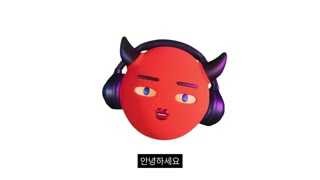
완성까지 걸린 시간, 5년
조회수 421,110좋아요 13,686댓글 1,000업로드 2026-02-09길이 1340.21초854x480(소스 480p, 원본 16:9 1080p 추정) · 29.97fps · 16:9 · -16.7 LUFS (LRA 10.5)
3D 악마 아바타 호스트가 5년 걸려 낸 첫 책 '더블 클릭'의 표지·내지 디자인 비유와 집필 뒷이야기를 '형식/내용' 2부 설명회로 풀고, 팬 굿즈·웹사이트·사인본으로 마무리하는 팬덤형 제작기 영상.
🔥 떡상 이유
- 시리즈 오픈 루프 회수: 2026년 첫 영상에서 '오랫동안 준비한 것이 완성됐다, 다음 영상에서 공개'라고 예고 → 이 영상은 그 궁금증의 해답. 기존 구독자에게 '결말 편' 효과로 초기 클릭률 확보.
- 제목의 호기심 갭: '완성까지 걸린 시간, 5년' — 무엇이 완성됐는지(책) 제목에 숨김. 숫자(5년) + 생략된 대상 = 클릭해야만 풀리는 정보 공백.
- 미스디렉션 콜드오픈: 시청자 추측(결혼? 출산?)을 손그림 밈으로 재연 → '뭘 낳긴 낳았는데' → 실사 손이 아바타 알을 깨고 책이 튀어나오는 리빌(20초). 웃음+정답을 20초 안에 주는 속도.
- 로드맵 약속 + 자문자답 리훅: 44초에 '형식/내용 두 파트' 진자 그래픽으로 구조를 선언하고, 각 소챕터를 '왜 형식부터? / 왜 더블 클릭일까요? / 그럼 배경 이미지는 뭐냐?' 질문으로 열어 매 1~2분마다 작은 궁금증을 새로 심음.
- 밈 펀치 B롤: 추상 설명(세대 분석·합치) 직후 스톡사진+가짜 대사 라벨('언니 책을 써 봐', '긁적', '무슨 의미?'), 악마 얼굴 합성 점프맨 등으로 3~6초마다 패턴 인터럽트 → 첫 90초 시각 변화 약 24회(추정, 측정 컷은 16회).
- 메이킹 오브(과정 공개) 콘텐츠: 표지 시안 1·2·최종, 지뢰찾기 레퍼런스, 선·나이테 비유 등 디자인 해설을 모션그래픽으로 보여줘 '디자인/브랜딩 강의'로도 소비됨 → 비팬층 유입(추정).
- 파라소셜 감정 페이오프: 2부에서 5년 자기의심·상실·새벽 이메일 고백을 A롤 롱테이크(최대 143초)로 편집 밀도를 일부러 낮춰 진정성 극대화 → 팬 결속과 댓글(1,000개) 폭발.
- 참여형 CTA 다발: 웹사이트 게임(rganzi.com), 한정 사인본, 멤버십 1년+ 회원 닉네임별 손그림 카드, 엔딩 크레딧에 팬 닉네임·댓글 수록 → 끝까지 보고 자기 이름을 찾게 만드는 장치.
hook지난 영상 예고 회수 + 시청자 오해(결혼/출산) 재연 개그 → 20초에 '책을 낳았어요' 리빌
conflict5년 걸린 이유 = 끝없는 자기의심과 '왜 영상이 아닌 글이어야 하나'라는 본질 질문, 주변인의 상실
payoff형식(디자인 비유)과 내용(집필 고백)의 합치 = 책 제목 '더블 클릭(선택과 실행)'의 의미 완성 + 팬 보상(사인본·카드·웹사이트)
loop엔딩 크레딧(234초)에 팬 닉네임·댓글 수록 → 자기 이름 찾기 위해 끝까지 시청/재시청, 설명란 구글드라이브 카드 링크로 재방문
⏱ 편집 리듬
컷 수92평균 컷 길이14.57최단/최장0.25 / 234.21분당 컷4.07해석측정 컷(8fps/160px)은 흰 배경 위 그래픽 교체·PIP 유지 전환을 많이 놓침. 첫 90초는 측정 17샷(평균 6.11초)이지만 시트 관측상 시각 변화는 약 3~4초마다(추정 24회). 본편(0~1106초) 평균 12.15초, 1부(형식, 0~609초)는 B롤·그래픽 밀도 높고 2부(내용, 609~1106초)는 A롤 롱테이크(59·144·82·50·62초)로 의도적 감속. 0.25~0.5초 초단 펀치인(608.75, 1006.875)과 0.5초 몽타주 버스트(331~333, 526~531)로 중간중간 리듬 스파이크.
🧭 전체 구성 (챕터)
| 구간 | 이름 | 내용 | 이탈 방지 장치 |
|---|---|---|---|
| 0–24.25s | 콜드오픈 훅(떡밥 회수+오해 개그) | 인사 → 지난 영상 예고 회수 → 결혼·출산 추측 손그림 재연 → 알 깨고 책 리빌 | 미스디렉션 + 20초 내 정답, AI 사용 고지로 신뢰 |
| 24.25–44.25s | 배경(라이브 질문과 5년) | '언니 책 써 봐' → '쓰고 있다' → '언제 나와요?' → '나왔습니다' | 밈 3연타(스톡 남자/긁적 소년/창문 여자 푸시인) + 펀치인 해소 |
| 44.25–51.63s | 로드맵 선언 | 설명회는 형식·내용 두 파트, 형식부터 | 진자 그래픽 = 전체 구조 약속(시청 지속 계약) |
| 51.63–130.5s | 왜 형식부터(세대 분석) | 지금 세대는 형식+내용 합치 때 소비, 굿즈처럼 갖고 싶은 책, 팬에 대한 도리 → 비유법 선택 | 'why 형식?' 자문자답, 합성 점프맨 하이파이브, 3D 책 턴테이블 반복 노출 |
| 130.5–250.63s | 제목 '더블 클릭'의 탄생 | 선택의 책임 질문(인용 카드) → 주제=선택과 실행 → 다트/종이 뚫기 탈락 → 클릭 1회=선택 2회=실행 | '왜 더블 클릭일까요?' 질문 → 탈락 아이디어 1초 짤로 빠르게 → 다이어그램 정답 |
| 250.63–342.75s | 시안 1·2 과정 | 지뢰찾기 UI 차용 첫 시안 → 셀프 혹평(플랫하다, 죽었다) → 두 번째 시안의 고통 | 실패담 + 0.5초 시안 몽타주 버스트, 구글드라이브 PDF 공유 약속 |
| 342.75–519.5s | 최종 표지 디자인 해설 | 가로선 타이틀=흔들리는 선택, 세로선 배경=나이테, 팀컬러(블랙·레드·화이트), 책등 이중원 로고, 틀어진 악마, '지음→아이' 말장난 | '그럼 배경 이미지는 뭐냐?' 리훅, 모션그래픽으로 비유 1:1 시각화, 깨알 포인트 예고 |
| 519.5–608.75s | 내부 디자인(영화관 비유) | 흰 속지→타이틀→검정 속지→목차 = 영화관 불 꺼짐, 목차=영화 크레딧, 영어 강조문 | 빨간 털장갑 실물 책 촬영으로 촉감·실물감, 디자인 실장 감사 |
| 608.75–812.13s | 2부 내용: 5년이 걸린 이유 | 5년 전 계약, 마케터 이메일에 반해 계약, '왜 글이어야 하나' 본질 질문, 자기의심·수치심 반복 | 0.5초 줌 펀치로 파트 전환 → A롤 롱테이크로 고백 몰입 |
| 812.13–900.0s | 전환점(상실과 새벽 이메일) | 가까운 이들의 병·죽음, '알맹스 곁에 있어 주려고' 버팀, 새벽 벤치의 이메일, 이유는 에필로그에 | 감성 야경 B롤 + 정보 일부 보류(에필로그로 유도) |
| 900.0–982.0s | 책 메시지 + 웹사이트 체험 | 완벽한 선택은 없다, rganzi.com 캐릭터 그리기·100초 슬라이스 게임 | 무료 참여 CTA(비구매자 포섭) |
| 982.0–1018.75s | 한정 사인본 | 5,000개+ 직접 사인, AGZ 사인 공개 | 희소성 + 0.25초 틸트 줌 개그 |
| 1018.75–1042.0s | 멤버십 팬카드 | 빨맹스(1년+ 멤버) 닉네임별 손그림 카드, 메일 요청 시 추가 | 멤버십 업셀 + 팬 인정 |
| 1042.0–1106.0s | 클로징 고백·감사 | 사랑한다는 말을 못 하는 이유, 자기비판에 괴로운 이들에게 응원, 시그니처 아웃트로 | 취약성 고백 → 감정 여운 |
| 1106.0–1340.21s | 엔딩 크레딧+엔딩곡 | 책 판권·지인·멤버 닉네임 크레딧 롤 + 팬 댓글 카드 | 이름 찾기 루프, 체류시간 연장 |
대본 공식① 공손 구어체('~했거든요/~잖아요/~했습니다')와 반말 속마음 인용('언니 책 쓸 생각 없어?', '내가 왜 책을 써야 하지?')을 교차. ② 문장은 자막 1청크(2~5어절) 단위로 끊기게 짧게, 1문장=2~4청크. ③ 자문자답 리훅: '왜 형식부터 설명을 하냐? 왜냐하면…', '왜 더블 클릭일까요?', '그럼 배경 이미지는 뭐냐?', '책 등 디자인을 한번 볼까요?' — 소챕터 시작마다 질문 1개. ④ 사고 과정 공개: 후보 A(다트)·B(종이 뚫기) 탈락 → 정답(클릭) 순서로 '발견의 쾌감' 재현. ⑤ 모든 추상 개념에 일상 비유 1개(나이테, 마우스 꾹 누르기, 영화관 불 꺼짐). ⑥ 셀프 디스/쑥스러움 개그를 진지한 설명 직후 배치('혼자 음흉하게 웃으면서 만족했죠', '처음 해봤습니다 하하하'). ⑦ 2부는 시간순 고백(계약→의심→상실→이메일→다짐)이고, 핵심 정보 일부는 보류('에필로그에 담아뒀으니'). ⑧ 마무리는 CTA 3종(웹사이트·사인본·멤버십) → 취약성 고백 → 감사 → 시그니처 아웃트로 '지금까지 알고 보면 간단한 지식 알간지였습니다'.
첫 30초 대본 원문[원문(자동자막 오탈자 교정)] (0:00) 안녕하세요. 알고 보면 간단한 지식, 알간지입니다. 제가 2026년 첫 번째로 올린 영상에서 '오랫동안 준비해 온 것이 드디어 완성됐다, 다음 영상에서 소개드리겠다'고 하니 '결혼을 했다', '애를 낳았다' 추측하는 분들이 계셔서 너무 재밌었어요. 네. 아쉽게도 둘 다 아닙니다. 예상하신 대로 뭘 낳긴 낳았는데 애는 아니고 책을 낳았어요. (0:24) 제가 라이브를 할 때마다 '언니 책 쓸 생각 없어?'라는 질문을 꽤 받았었고, 그에 '사실 쓰고 있다'라고 대답을 했었어요. (0:33) … [자동자막 원본 일부: '고한이 결혼을 했다. 애를 낳았다. 주측하는 분들이' — '고한이'는 인식 오류로 추정]
🎞 B롤·삽입 유형
| 유형 | 빈도 | 제작법 |
|---|---|---|
| 스톡사진 밈 + 가짜 대사 라벨 | 1부 분당 약 2~3회(첫 90초 6회) | 흰 배경 컷아웃 스톡 인물(과장 표정) + 상단 큰 흰 모노스페이스 글씨/검정 박스 라벨('언니 책을 써 봐', '긁적', '무슨 의미?'). 3~5초 유지. |
| 아바타 얼굴 합성 콜라주 | 5~10분에 1회 | 스톡 인물 몸통(점프하는 비즈니스맨 등)에 평면 악마 얼굴 PNG 합성, 좌우 슬라이드·하이파이브 글로우. |
| 손그림 일러스트 밈 | 훅 1회 | 마커 선화 + 플랫 채색(악마 신부/노란 아기), 디지털 줌인·아웃, 상단 'AI 사용 고지' 회색 텍스트. |
| 3D 제품 목업(책 턴테이블) | 1부 반복(총 5~6회, 합계 약 60초) | 흰 배경 위 3D 하드커버 책 Y축 360° 회전 + 아바타 PIP 우하단. Blender/목업 툴 렌더 또는 image-to-video. |
| 키네틱 타이포/영어 키워드 카드 | 분당 약 1회 | 흰 또는 검정 배경 단어 팝업('형식 + 내용', 'metaphor', 'click', 'rganzi.com'), 빨강 #E3202B 강조. |
| 인용 텍스트 카드 | 챕터당 0~1회 | 검정 배경 가는 흰 글씨 2줄 중앙, 한 줄씩 페이드인, PIP 유지. |
| 디자인 해설 모션그래픽 | 1부 후반 연속(342~519초) | 가로선 글리치 타이틀 분해/재조립, 세로선 굵기로 나이테·얼굴 드러내기, 픽셀 체크박스 악마 얼굴 그리드. |
| 작업과정 화면 녹화/기획서 캡처 | 시안 챕터에 집중(0.5초 버스트 포함) | 어두운 기획서 PDF·피그마 핸들 박스 캡처를 0.5초 컷으로 연속 스크롤. |
| 리터럴 스톡 영상 | 5분에 1~2회 | 말 그대로 보여주기(다트 명중, 손가락 종이 뚫기, 밤 공원·벤치) 1~7초. |
| 드라마/예능·밈 영상 클립 | 훅~2분 내 2회 | 창문 밖 응시 밈(느린 푸시인), 머리 쥐어뜯는 드라마 장면 — 원본 음성 제거, 자막만. |
| 실물 책 촬영(빨간 털장갑 손) | 내지 챕터 연속 + 사인본 | 검정 배경 소프트박스, 빨간 복슬 장갑 낀 손으로 페이지 넘김·가리키기, 핸드헬드, 말 단위 컷. |
| 웹사이트 시연 화면 녹화 | 900~982초 1회 | 검정 배경 중앙 웹앱 캡처 + PIP. |
| 크레딧 롤 + 팬 댓글 카드 | 엔딩 1회(234초) | 검정 배경 우측 흰 크레딧 스크롤, 좌측 댓글 스크린샷 페이드 인/아웃, 영어 보컬 엔딩곡. |
🎨 스타일 바이블
룩순백(또는 순흑) 무한 배경 + 스타일라이즈드 3D 클레이풍 악마 아바타 A롤, 플랫 모션그래픽과 컷아웃 밈 콜라주를 섞은 미니멀 에디토리얼 룩조명아바타: 정면 소프트박스 균일광, 그림자 없음, 뿔·헤드폰 약한 스페큘러 / 실물 책: 검정 배경 단일 탑 소프트박스(로우키) / 스톡: 원본 그대로색#EE3B2E(아바타 토마토 레드), #C8102E(책 표지 딥 레드, 추정), #000000(검정 배경·자막 박스), #FFFFFF(흰 배경·자막), #3B2B5E(뿔·헤드폰 딥 퍼플, 추정), #3D6FD8(홍채 코발트 블루, 추정) — 채널 팀컬러 블랙·레드·화이트(본인 언급)렌즈아바타: 망원 느낌(왜곡 없음, 85mm 상당, 전체 초점) / 펀치인은 디지털 크롭 115~220% / 실물 책: 매크로 얕은 심도세트물리적 세트 없음 — 흰 무한 배경(기본)·검정 배경(강조·카드). 아바타는 전신 없이 머리+헤드폰만. 그래픽 구간에선 아바타가 우하단 PIP(가로 약 27%, x 71~98%, y 55~97%)로 상주하는 '앵커 PIP' 레이아웃.자막 스타일기본 자막: Pretendard/Noto Sans KR Medium 계열(추정), 흰 #FFFFFF 글씨 + 불투명 검정 #000000 박스(패딩 좌우 약 0.6em), 하단 중앙 박스 중심 Y≈89%, 글자 높이 ≈ 화면 4.5%(1080p 약 46~48px), 2~5어절 청크로 컷 단위 교체(페이드 없음). 검정 배경 카드 구간에선 박스 없이 흰 글씨. 밈 라벨: 모노스페이스/도트 계열(둥근모꼴 추정) 흰 글씨 + 검정 박스, 글자 높이 ≈ 8~9%, 자간 넓게, 상단 중앙 또는 인물 머리 옆에 팝(0프레임 등장). 키워드 하이라이트: 그래픽 내 빨강 #E3202B('선택', '실행', 'metaphor'). 고지문: 회색 #BDBDBD 작은 글씨 상단 중앙('이미지 제작 일부에 ai가 사용됨').워터마크상시 워터마크/로고 없음(추정). 채널 로고 인트로 없음.
알간지(호스트 아바타) — 빨간 완전 구형 머리, 짧고 굽은 보라-검정 뿔 2개, 대형 보라-검정 오버이어 헤드폰, 복숭아빛 흰자+코발트 파랑 홍채 아몬드 눈, 가는 일자 눈썹, 작은 코, 광택 있는 빨간 도톰 입술(삐죽). 몸 없음. 입은 거의 안 움직이고 눈·눈썹·고개로 연기(페이스트래킹 추정). 여성 목소리 내레이터. 실사 손 필요 시 빨간 털장갑.
캐릭터 시트 프롬프트Character sheet, 16:9, pure white background, stylized 3D clay-like devil avatar: perfectly round glossy tomato-red head (#EE3B2E), two short curved dark purple-black horns, oversized matte purple-black over-ear headphones, almond eyes with pale peach sclera and cobalt-blue irises, thin dark-red straight eyebrows, tiny nose, small glossy pouting red lips, no body, soft subsurface scattering, Pixar-meets-indie-3D look, three views (front, 3/4, profile) plus expression row (neutral, smug brow raise, sleepy half-closed eyes, eye-roll, laughing), consistent proportions, soft studio light, no body
동물 버전 캐릭터Character sheet, 16:9, pure white background, stylized 3D clay-like hamster avatar 'Hamzzi': round fluffy golden-orange hamster head with cream cheeks, two tiny curved dark purple devil horns, oversized matte purple-black over-ear headphones, big glossy black eyes with small white highlights, thin expressive brows, tiny pink nose, small pouting mouth, no body, soft fur shading, Pixar-meets-indie-3D look, three views (front, 3/4, profile) plus expression row (neutral, smug brow raise, sleepy half-closed eyes, eye-roll, laughing), keep the same purple-black headphones and tiny devil horns as brand anchors, plus a pair of tiny hamster paws in fluffy red knit mittens for hand shots
밈 엑스트라(스톡 인물) — 과장 표정의 흰 배경 컷아웃 스톡 인물(안경 남자, 머리 긁는 소년, 안경 올리는 남자, 점프하는 비즈니스맨) — 시청자·호스트 속마음 대변
캐릭터 시트 프롬프트Cutout stock photo on pure white, exaggerated expressive person, wide-angle close portrait, bright flat studio light, meme-ready
동물 버전 캐릭터Cutout photo on pure white of an exaggerated expressive guinea pig / squirrel in human clothes, wide-angle close portrait, meme-ready (햄찌와 구분되는 조연 동물)
🔊 오디오
목소리여성 내레이터 1인, 차분한 중저음·빠른 대화 속도(분당 약 330~360음절, 추정), 설명 구간은 담백, 2부 고백 구간은 속도↓·쉼↑, 개그는 무표정 드라이 톤BGM본편은 내레이션 중심으로 BGM이 거의 들리지 않거나 아주 낮은 로파이/앰비언트 패드(추정, 70~85 BPM), 엔딩 크레딧은 영어 여성 보컬 인디 어쿠스틱 발라드(추정 70~80 BPM, 기타+피아노)효과음19.75~23.0 알 깨짐 크랙 + 휙(추정)
44.25~49.9 진자 틱(추정)
72.4~77.9 하이파이브 반짝(추정)
222.1 다트 '퍽'(추정)
231.9~250.6 마우스 클릭 1·2회(추정)
331.25~333.4 시안 몽타주 스와이프(추정)
608.75 줌 펀치 whoosh(추정)
1006.875 웃음 틸트 줌 효과(추정)
1106.04~1107.69 무음 1.65초(측정) 후 엔딩곡라우드니스-16.7TTS 팁여성 TTS 차분·중저음, 속도 1.05~1.1x, 문장 끝 '~거든요/~잖아요'는 살짝 올림. 자문자답 질문('왜 더블 클릭일까요?') 뒤 350ms 쉼. 2부 고백 구간 속도 0.95x, 쉼표마다 400~600ms. 개그 라인('처음 해봤습니다. 하하하')은 건조하게. 햄찌 버전은 피치 +2 반음·약간 밝게, 말끝 귀여운 비음 가능하나 과장 금지.
BGM 생성 프롬프트Minimal lo-fi ambient bed for a calm Korean video essay, 76 BPM, soft felt piano, warm pad, subtle vinyl crackle, very sparse, no drums in first 8 bars, no vocals, stays under narration; ending track: gentle indie acoustic ballad, female breathy vocal, fingerpicked guitar and soft piano, 74 BPM, intimate and hopeful
🎬 컷별 완전 분해 (36개)
컷 1 · 채널 시그니처 인사 = 브랜드 각인
0.0s → 2.375s (2.375s)아바타(머리+헤드폰)
하단 자막 박스
샷MS(아바타 머리 단독)앵글아이레벨 정면카메라고정 + 고개 미세 끄덕임구도순백 배경 중앙 정렬, 머리가 화면 세로 60% 차지, 위아래 여백 균등, 시선 정면(0.5초에 한 번 옆 흘김)동작빨간 악마 아바타가 정면을 보며 인사, 눈을 한 번 옆으로 굴림대사알간지: 안녕하세요. 알고 보면 간단한 지식화면 자막'안녕하세요' → '알고 보면 간단한 지식' (하단 중앙 흰 글씨+검정 박스(Y≈89%))들어오는 전환없음(영상 시작 콜드오픈, 인트로 로고 없음)효과음/음악BGM 없이 목소리로 바로 시작(추정)역할채널 시그니처 인사 = 브랜드 각인
1순위
minimax-h3대사 오디오+미세 립싱크 동시 생성, 무료·팀 기본
2순위
kling-v3-omni레퍼런스 캐릭터 일관성 유지하며 눈·고개 미세 연기
3순위
seedance-2-0눈 굴리기·눈썹 등 미세표정 클로즈업 강점
① 이미지 프롬프트 (원본 클론)16:9 frame, pure white seamless background, stylized 3D clay-like devil avatar: perfectly round glossy tomato-red head (#EE3B2E), two short curved dark purple-black horns, oversized matte purple-black over-ear headphones, almond eyes with pale peach sclera and cobalt-blue irises, thin dark-red straight eyebrows, tiny nose, small glossy pouting red lips, no body, soft subsurface scattering, Pixar-meets-indie-3D look, head centered, filling 60% of frame height, eye-level straight-on, soft even studio light, no shadows, clean minimal, 85mm look
② 영상 프롬프트 (원본 클론)The devil avatar head gently bobs while greeting, glances sideways once at 0.5s then back to camera, lips barely move (subtle speech), 2.4s, locked-off camera. Korean line: '안녕하세요. 알고 보면 간단한 지식'
③ 동물 버전 이미지 프롬프트16:9 frame, pure white seamless background, stylized 3D clay-like hamster avatar 'Hamzzi': round fluffy golden-orange hamster head with cream cheeks, two tiny curved dark purple devil horns, oversized matte purple-black over-ear headphones, big glossy black eyes with small white highlights, thin expressive brows, tiny pink nose, small pouting mouth, no body, soft fur shading, Pixar-meets-indie-3D look, head centered filling 60% of frame height, eye-level, soft even studio light, clean minimal
④ 동물 버전 영상 프롬프트Hamzzi hamster head gently bobs while greeting, whiskers twitch, glances sideways once then back to camera, small mouth movement, 2.4s, locked-off. Korean line: '안녕하세요. 알고 보면 간단한 지식'
네거티브realistic human host, live-action presenter, photoreal skin, extra horns, extra eyes, open mouth teeth, deformed headphones, text artifacts, misspelled Korean, watermark, logo, cluttered background, gradient background, drop shadow on white, low resolution, blurry, jpeg artifacts
컷 2 · 채널명 강조 스팅(0.9초)
2.375s → 3.25s (0.875s)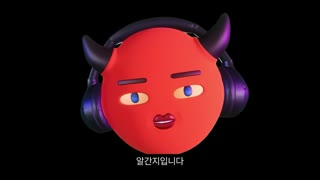
아바타
샷MCU(약 115% 펀치인)앵글아이레벨 정면카메라하드 펀치인(스케일 업) 정지구도검정 배경으로 반전, 머리 약간 확대되어 화면 70% 차지동작채널명 말할 때만 배경이 검정으로 바뀜대사알간지: 알간지입니다.화면 자막'알간지입니다' (하단 중앙 흰 글씨+검정 박스(Y≈89%))들어오는 전환하드컷 + 배경 흰→검 반전(플래시형 패턴 인터럽트)효과음/음악없음(추정)역할채널명 강조 스팅(0.9초)
1순위
hailuo-2-3과장된 리액션·펀치인 코믹 동작 빠르게
2순위
pixverse-v6짧은 밈 루프·과장 표정
3순위
grok-imagine-video-1-5짧은 개그 컷 대안
① 이미지 프롬프트 (원본 클론)16:9 frame, pure black background, stylized 3D clay-like devil avatar: perfectly round glossy tomato-red head (#EE3B2E), two short curved dark purple-black horns, oversized matte purple-black over-ear headphones, almond eyes with pale peach sclera and cobalt-blue irises, thin dark-red straight eyebrows, tiny nose, small glossy pouting red lips, no body, soft subsurface scattering, Pixar-meets-indie-3D look, slightly larger 115% framing, head centered, rim light on horns and headphones, dramatic but clean
② 영상 프롬프트 (원본 클론)Hard punch-in hold, avatar says '알간지입니다' with a slight chin lift, 0.9s, no camera motion
③ 동물 버전 이미지 프롬프트16:9 frame, pure black background, stylized 3D clay-like hamster avatar 'Hamzzi': round fluffy golden-orange hamster head with cream cheeks, two tiny curved dark purple devil horns, oversized matte purple-black over-ear headphones, big glossy black eyes with small white highlights, thin expressive brows, tiny pink nose, small pouting mouth, no body, soft fur shading, Pixar-meets-indie-3D look, 115% framing, centered, rim light on fur edges
④ 동물 버전 영상 프롬프트Hamzzi says '햄찌입니다' with a proud chin lift, 0.9s, static
네거티브realistic human host, live-action presenter, photoreal skin, extra horns, extra eyes, open mouth teeth, deformed headphones, text artifacts, misspelled Korean, watermark, logo, cluttered background, gradient background, drop shadow on white, low resolution, blurry, jpeg artifacts
컷 3 · 오해 개그로 떡밥 회수 = 오픈 루프 유지(정답 '책'을 20초까지 지연)
3.25s → 19.75s (16.5s)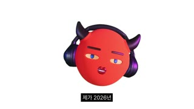
악마 신부 일러스트
밈 라벨 '후아유'
'?' 라벨
샷MS → 손그림 일러스트 WS/MS(내부 줌)앵글아이레벨카메라고정 + 일러스트 구간 디지털 줌인(13.5s)·줌아웃(17s)구도3.25~11.5 아바타 중앙(흰 배경) / 11.5~17.5 손그림 악마 신부 일러스트 전신→상반신 줌 / 18~19.75 악마 전신 일러스트 쪼그려 앉기(측정 누락된 내부 컷 다수)동작지난 영상 예고('완성됐다')를 회수하며 시청자 추측을 재연: 웨딩드레스 입은 악마(결혼) → 노란 아기 안음(출산) → 아기에 '?' 라벨, 악마 머리 옆 '후아유' → '둘 다 아닙니다' 줌아웃 → 전신 악마가 쪼그려 앉아 무언가를 '낳는' 자세대사알간지: 제가 2026년 첫 번째로 올린 영상에서 오랫동안 준비해 온 것이 드디어 완성됐다, 다음 영상에서 소개드리겠다고 하니 결혼을 했다, 애를 낳았다 추측하는 분들이 계셔서 너무 재밌었어요. 네. 아쉽게도 둘 다 아닙니다. 예상하신 대로 뭘 낳긴 낳았는데화면 자막자막 청크 2~4단어('제가 2026년'/'첫 번째로 올린 영상에서'/'결혼을 했다'/'애를 낳았다'...) + 밈 라벨 '후아유', '?' (상단 흰 모노스페이스 글씨+검정 박스) + 상단 회색 고지 '이미지 제작 일부에 ai가 사용됨'들어오는 전환하드컷(말 단위로 그림 교체, 결혼→출산 순서대로 컷)효과음/음악코믹 효과음 가능성(추정)역할오해 개그로 떡밥 회수 = 오픈 루프 유지(정답 '책'을 20초까지 지연)
1순위
(Pollo 이미지 모델 중 레퍼런스 지원 모델)그래픽 카드는 이미지 1장 + HyperFrames/FFmpeg 애니메이션이 정확
2순위
kling-v33D 책 목업 회전이 필요할 때
3순위
wan-v3-0추상 라인 애니메이션 대안
① 이미지 프롬프트 (원본 클론)16:9 frame, off-white paper background, loose hand-drawn marker illustration, a red devil character with square face and small black horns wearing a frilly white wedding dress and long veil, arms holding a yellow cartoon baby, flat colors, thin black outlines, Korean webcomic meme style
② 영상 프롬프트 (원본 클론)Static illustration, 2s full-body, then digital zoom-in to bust over 0.5s at the line '애를 낳았다', hold, then quick zoom-out; add a boxed label '후아유' popping at the head and a '?' tag on the baby
③ 동물 버전 이미지 프롬프트16:9 frame, off-white paper background, loose hand-drawn marker illustration of a chubby hamster with tiny devil horns wearing a frilly white wedding dress and veil, holding a yellow cartoon baby hamster, flat colors, thin black outlines, Korean webcomic meme style
④ 동물 버전 영상 프롬프트Static drawing, zoom-in to bust at '애를 낳았다', labels pop in ('후아유', '?'), then zoom-out; 6s total
네거티브realistic human host, live-action presenter, photoreal skin, extra horns, extra eyes, open mouth teeth, deformed headphones, text artifacts, misspelled Korean, watermark, logo, cluttered background, gradient background, drop shadow on white, low resolution, blurry, jpeg artifacts
컷 4 · 정답 공개(리빌) — 20초 지점에서 오픈 루프 닫고 주제 제시
19.75s → 24.25s (4.5s)
양손+알
책(DOUBLE CLICK)
샷CU(손+알) → 제품 인서트앵글아이레벨/탑 약간카메라고정, 알 깨짐 후 책이 튀어나와 3D 회전하며 화면 중앙으로구도검정 배경 중앙에 실사 양손이 빨간 아바타 얼굴 알을 쥐고 쪼갬, 22~23초 파편→책 회전 등장동작실사 손이 아바타 얼굴이 그려진 빨간 알을 반으로 쪼개자 조각이 튀고, 그 안에서 책이 회전하며 커짐대사알간지: 애는 아니고 책을 낳았어요.화면 자막'애는 아니고' → '책을 낳았어요'들어오는 전환매치컷(앞 컷 검은 원=알 → 실사 알) — 액션 연결효과음/음악알 깨지는 효과음 + 휘익(추정)역할정답 공개(리빌) — 20초 지점에서 오픈 루프 닫고 주제 제시
1순위
veo-3-1실사 자료화면·카메라 푸시인/핸드헬드 질감
2순위
kling-v3제품(책) 회전·손 동작 물리감
3순위
wan-v3-0환경/야경 B롤 저비용
① 이미지 프롬프트 (원본 클론)16:9 frame, pure black background, two realistic hands entering from left and right holding a glossy red egg painted with the devil avatar's face (stylized 3D clay-like devil avatar: perfectly round glossy tomato-red head (#EE3B2E), two short curved dark purple-black horns, oversized matte purple-black over-ear headphones, almond eyes with pale peach sclera and cobalt-blue irises, thin dark-red straight eyebrows, tiny nose, small glossy pouting red lips, no body, soft subsurface scattering, Pixar-meets-indie-3D look face print), studio top light, macro product shot
② 영상 프롬프트 (원본 클론)Hands crack the egg in half, shards fly, a red-and-black hardcover book titled 'DOUBLE CLICK' spins out in 3D and grows to center, 4.5s, locked camera, crisp crack sound
③ 동물 버전 이미지 프롬프트16:9 frame, pure black background, two small hamster paws in red knit mittens holding a glossy golden egg painted with Hamzzi's face, macro product shot
④ 동물 버전 영상 프롬프트Hamster paws crack the egg, shards fly, a red hardcover book spins out in 3D and grows to center, 4.5s, locked camera
네거티브realistic human host, live-action presenter, photoreal skin, extra horns, extra eyes, open mouth teeth, deformed headphones, text artifacts, misspelled Korean, watermark, logo, cluttered background, gradient background, drop shadow on white, low resolution, blurry, jpeg artifacts
컷 5 · 시청자 목소리 시각화(공감 유도)
24.25s → 29.625s (5.375s)
스톡 남자
밈 라벨 '언니 책을 써 봐'
샷MS 아바타 → 밈 스톡사진 MCU앵글아이레벨 / 스톡사진 광각 로우카메라고정(스톡사진 약한 줌인 추정)구도24.25~26 아바타 중앙 / 26~29.6 흰 배경 스톡사진: 안경 쓴 남자가 검지를 치켜듦, 얼굴 중앙, 상단 중앙 라벨동작시청자 질문을 '스톡사진 남자+가짜 대사 라벨'로 의인화대사알간지: 제가 라이브를 할 때마다 '언니 책 쓸 생각 없어?'라는 질문을 꽤 받았었고화면 자막라벨 '언니 책을 써 봐'(큰 흰 모노스페이스+검정 박스, 자간 넓음) + 하단 자막들어오는 전환하드컷효과음/음악없음역할시청자 목소리 시각화(공감 유도)
1순위
hailuo-2-3과장된 리액션·펀치인 코믹 동작 빠르게
2순위
pixverse-v6짧은 밈 루프·과장 표정
3순위
grok-imagine-video-1-5짧은 개그 컷 대안
① 이미지 프롬프트 (원본 클론)16:9 frame, pure white background, cutout stock photo of a nerdy man in rectangular glasses and lavender shirt with tie, raising index finger toward camera, wide-angle close portrait, exaggerated face, bright studio light
② 영상 프롬프트 (원본 클론)Static stock photo with slow 3% push-in over 3.5s; a white-on-black boxed caption '언니 책을 써 봐' pops at top-center
③ 동물 버전 이미지 프롬프트16:9 frame, pure white background, cutout photo of a nerdy guinea pig in tiny rectangular glasses and lavender shirt with tie, raising one paw finger toward camera, wide-angle close portrait
④ 동물 버전 영상 프롬프트Static cutout with slow 3% push-in; boxed caption '언니 책을 써 봐' pops at top
네거티브realistic human host, live-action presenter, photoreal skin, extra horns, extra eyes, open mouth teeth, deformed headphones, text artifacts, misspelled Korean, watermark, logo, cluttered background, gradient background, drop shadow on white, low resolution, blurry, jpeg artifacts
컷 6 · 자기비하 유머(리액션 밈)
29.625s → 33.125s (3.5s)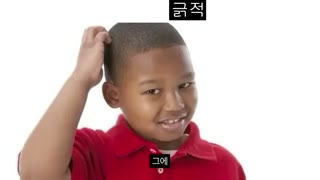
소년
라벨 '긁적'
샷MCU 스톡사진앵글아이레벨카메라고정구도흰 배경 컷아웃: 머리를 긁는 소년 좌측 1/3, 라벨 우상단동작머리 긁으며 멋쩍게 웃는 소년 = 호스트의 민망함 대리 표현대사알간지: 그에 '사실 쓰고 있다'라고 대답을 했었어요.화면 자막라벨 '긁적' + 하단 자막들어오는 전환하드컷효과음/음악없음역할자기비하 유머(리액션 밈)
1순위
hailuo-2-3과장된 리액션·펀치인 코믹 동작 빠르게
2순위
pixverse-v6짧은 밈 루프·과장 표정
3순위
grok-imagine-video-1-5짧은 개그 컷 대안
① 이미지 프롬프트 (원본 클론)16:9 frame, pure white background, cutout stock photo of a smiling boy in red polo scratching his head awkwardly, placed left third, bright studio light
② 영상 프롬프트 (원본 클론)Static, boxed label '긁적' pops top-right at 0.2s, 3.5s hold
③ 동물 버전 이미지 프롬프트16:9 frame, pure white background, cutout photo of a young hamster in a red polo scratching its head with a paw, awkward smile, left third
④ 동물 버전 영상 프롬프트Hamster scratches head twice, awkward grin, boxed label '긁적' pops, 3.5s
네거티브realistic human host, live-action presenter, photoreal skin, extra horns, extra eyes, open mouth teeth, deformed headphones, text artifacts, misspelled Korean, watermark, logo, cluttered background, gradient background, drop shadow on white, low resolution, blurry, jpeg artifacts
컷 7 · B롤 사이 브릿지(A롤 호흡)
33.125s → 35.125s (2.0s)
아바타(머리+헤드폰)
하단 자막 박스
샷MS 아바타앵글아이레벨카메라고정구도중앙 정렬 기본 구도동작눈 반쯤 감고 입술 삐죽(시간 흐름 한숨 표정)대사알간지: 그러고 시간이 정말 많이 흘러서화면 자막'그리고' → '시간이 정말 많이 흘러서'들어오는 전환하드컷(A롤 복귀)효과음/음악없음역할B롤 사이 브릿지(A롤 호흡)
1순위
minimax-h3대사 오디오+미세 립싱크 동시 생성, 무료·팀 기본
2순위
kling-v3-omni레퍼런스 캐릭터 일관성 유지하며 눈·고개 미세 연기
3순위
seedance-2-0눈 굴리기·눈썹 등 미세표정 클로즈업 강점
① 이미지 프롬프트 (원본 클론)16:9 frame, pure white background, stylized 3D clay-like devil avatar: perfectly round glossy tomato-red head (#EE3B2E), two short curved dark purple-black horns, oversized matte purple-black over-ear headphones, almond eyes with pale peach sclera and cobalt-blue irises, thin dark-red straight eyebrows, tiny nose, small glossy pouting red lips, no body, soft subsurface scattering, Pixar-meets-indie-3D look, half-closed sleepy eyes, pursed lips, centered
② 영상 프롬프트 (원본 클론)Avatar slowly half-closes eyes and pouts as if time passing, 2s, static
③ 동물 버전 이미지 프롬프트16:9 frame, pure white background, stylized 3D clay-like hamster avatar 'Hamzzi': round fluffy golden-orange hamster head with cream cheeks, two tiny curved dark purple devil horns, oversized matte purple-black over-ear headphones, big glossy black eyes with small white highlights, thin expressive brows, tiny pink nose, small pouting mouth, no body, soft fur shading, Pixar-meets-indie-3D look, half-closed sleepy eyes, pursed mouth, centered
④ 동물 버전 영상 프롬프트Hamzzi slowly half-closes eyes and puffs cheeks, 2s, static
네거티브realistic human host, live-action presenter, photoreal skin, extra horns, extra eyes, open mouth teeth, deformed headphones, text artifacts, misspelled Korean, watermark, logo, cluttered background, gradient background, drop shadow on white, low resolution, blurry, jpeg artifacts
컷 8 · 압박감 유머 + 푸시인으로 긴장 상승 → 다음 컷 해소
35.125s → 40.625s (5.5s)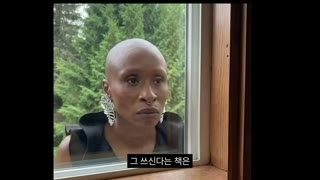
밈 인물 얼굴
라벨 '... 쓰고는 있나?'
샷MS → ECU(눈)앵글아이레벨, 창문 너머카메라느린 디지털 푸시인(MS→눈 ECU, 5.5초간 약 250%)구도검정 레터박스 속 밈 영상: 창밖에서 안을 들여다보는 여성, 얼굴 중앙→눈으로 수렴, 라벨 상단 중앙동작창밖에서 무표정하게 쳐다보는 유명 밈 클립(재촉하는 팬 의인화)대사알간지: 그 쓰신다는 책은 도대체 언제 나오는 거세요? 하는 질문을 많이 받았는데화면 자막라벨 '... 쓰고는 있나?' + 하단 자막들어오는 전환하드컷효과음/음악긴장 드론/무음(추정)역할압박감 유머 + 푸시인으로 긴장 상승 → 다음 컷 해소
1순위
veo-3-1실사 자료화면·카메라 푸시인/핸드헬드 질감
2순위
kling-v3제품(책) 회전·손 동작 물리감
3순위
wan-v3-0환경/야경 B롤 저비용
① 이미지 프롬프트 (원본 클론)16:9 frame, a bald woman with large silver statement earrings and nose ring staring blankly through a wooden window frame from outside, green pine trees behind, natural daylight, deadpan expression, documentary footage look
② 영상 프롬프트 (원본 클론)Slow continuous digital push-in from medium shot to extreme close-up on her eyes over 5.5s, she blinks once, deadpan stare; boxed caption '... 쓰고는 있나?' fades in at 1.5s
③ 동물 버전 이미지 프롬프트16:9 frame, a serious hamster with silver earrings staring blankly through a wooden window from outside, pine trees behind, natural daylight, deadpan
④ 동물 버전 영상 프롬프트Slow push-in to hamster eyes over 5.5s, one blink, deadpan
네거티브realistic human host, live-action presenter, photoreal skin, extra horns, extra eyes, open mouth teeth, deformed headphones, text artifacts, misspelled Korean, watermark, logo, cluttered background, gradient background, drop shadow on white, low resolution, blurry, jpeg artifacts
컷 9 · 펀치라인 강조 + 영상 목적 선언(약속)
40.625s → 44.25s (3.625s)
아바타(펀치인)
샷MCU(약 125% 펀치인) → MS앵글아이레벨카메라하드 펀치인 후 41.5초에 원래 사이즈로 컷백구도펀치인 시 머리가 화면 80% 차지동작당당하게 '나왔습니다' → 원래 사이즈로 돌아와 설명 시작대사알간지: 나왔습니다. 그래서 오늘은 책 설명회를 가져볼 예정입니다.화면 자막'나왔습니다' → '그래서 오늘은' → '책 설명회를 가져볼 예정입니다'들어오는 전환하드 펀치인(앞 푸시인 긴장 → 펀치인으로 해소)효과음/음악없음역할펀치라인 강조 + 영상 목적 선언(약속)
1순위
minimax-h3대사 오디오+미세 립싱크 동시 생성, 무료·팀 기본
2순위
kling-v3-omni레퍼런스 캐릭터 일관성 유지하며 눈·고개 미세 연기
3순위
seedance-2-0눈 굴리기·눈썹 등 미세표정 클로즈업 강점
① 이미지 프롬프트 (원본 클론)16:9 frame, pure white background, stylized 3D clay-like devil avatar: perfectly round glossy tomato-red head (#EE3B2E), two short curved dark purple-black horns, oversized matte purple-black over-ear headphones, almond eyes with pale peach sclera and cobalt-blue irises, thin dark-red straight eyebrows, tiny nose, small glossy pouting red lips, no body, soft subsurface scattering, Pixar-meets-indie-3D look, tight 125% framing, confident raised brow
② 영상 프롬프트 (원본 클론)Punch-in hold 0.9s on '나왔습니다' with a smug brow raise, then cut back to 100% framing for the rest, 3.6s
③ 동물 버전 이미지 프롬프트16:9 frame, pure white background, stylized 3D clay-like hamster avatar 'Hamzzi': round fluffy golden-orange hamster head with cream cheeks, two tiny curved dark purple devil horns, oversized matte purple-black over-ear headphones, big glossy black eyes with small white highlights, thin expressive brows, tiny pink nose, small pouting mouth, no body, soft fur shading, Pixar-meets-indie-3D look, tight 125% framing, smug raised brow
④ 동물 버전 영상 프롬프트Punch-in 0.9s smug look, cut back to normal framing, 3.6s
네거티브realistic human host, live-action presenter, photoreal skin, extra horns, extra eyes, open mouth teeth, deformed headphones, text artifacts, misspelled Korean, watermark, logo, cluttered background, gradient background, drop shadow on white, low resolution, blurry, jpeg artifacts
컷 10 · 로드맵 제시(챕터 예고 = 시청 지속 약속)
44.25s → 49.875s (5.625s)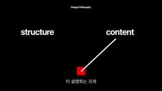
structure
content
빨간 사각 진자
샷그래픽 풀스크린앵글플랫카메라모션그래픽(진자 애니메이션)구도검정 배경, 상단 중앙 작은 'Design Philosophy', 좌 'structure'·우 'content'(흰 굵은 산세리프), 하단 중앙 빨간 사각형 + 흰 선이 진자처럼 좌우로 흔들림동작선이 '형식'을 말할 땐 structure, '내용'엔 content 쪽으로 기움(말과 싱크)대사알간지: 이 설명회는 크게 형식, 내용 두 파트로 나뉘는데 우선 형식부터 설명을 하겠습니다.화면 자막하단 자막 + 그래픽 영문 키워드들어오는 전환하드컷(흰→검 반전)효과음/음악틱 효과음(추정)역할로드맵 제시(챕터 예고 = 시청 지속 약속)
1순위
(Pollo 이미지 모델 중 레퍼런스 지원 모델)그래픽 카드는 이미지 1장 + HyperFrames/FFmpeg 애니메이션이 정확
2순위
kling-v33D 책 목업 회전이 필요할 때
3순위
wan-v3-0추상 라인 애니메이션 대안
① 이미지 프롬프트 (원본 클론)16:9 frame, pure black background, minimal motion graphic: small white text 'Design Philosophy' top-center, bold white sans-serif words 'structure' left and 'content' right, a small red square at bottom-center with a thin white line pointing up like a pendulum
② 영상 프롬프트 (원본 클론)The white line swings like a metronome between 'structure' and 'content', synced to narration, settles pointing at 'structure' at 3.5s, 5.6s
③ 동물 버전 이미지 프롬프트Same black minimal graphic with a tiny hamster paw holding the pendulum line
④ 동물 버전 영상 프롬프트Pendulum swings between words, lands on 'structure'
네거티브realistic human host, live-action presenter, photoreal skin, extra horns, extra eyes, open mouth teeth, deformed headphones, text artifacts, misspelled Korean, watermark, logo, cluttered background, gradient background, drop shadow on white, low resolution, blurry, jpeg artifacts
컷 11 · 자문자답의 '질문' 비트 — 궁금증 유발
49.875s → 51.625s (1.75s)
스톡 인물
라벨 'why 형식?'
샷MCU 스톡사진 → 아바타 기울어진 MCU앵글더치(기울임)카메라고정 → 51초 아바타가 기울어져 튀어나옴구도기울어진 사진 속 장발 남성이 책을 들고 미소, 좌상단 라벨 'why 형식?'동작갸우뚱하는 질문 제스처를 밈 사진+아바타 기울기로 표현대사알간지: 왜 형식부터 설명을 하냐?화면 자막라벨 'why 형식?' + 하단 자막들어오는 전환하드컷효과음/음악뿅(추정)역할자문자답의 '질문' 비트 — 궁금증 유발
1순위
hailuo-2-3과장된 리액션·펀치인 코믹 동작 빠르게
2순위
pixverse-v6짧은 밈 루프·과장 표정
3순위
grok-imagine-video-1-5짧은 개그 컷 대안
① 이미지 프롬프트 (원본 클론)16:9 frame, white background, tilted polaroid-like photo of a long-haired Korean young man smiling while holding a book, soft warm light, boxed caption 'why 형식?' at top-left
② 영상 프롬프트 (원본 클론)Photo tilts 5 degrees and holds 1s, then the devil avatar pops in large and tilted from the left edge, 1.75s
③ 동물 버전 이미지 프롬프트Tilted photo of a long-haired hamster smiling holding a book, caption 'why 형식?'
④ 동물 버전 영상 프롬프트Photo holds, then Hamzzi pops in tilted from left
네거티브realistic human host, live-action presenter, photoreal skin, extra horns, extra eyes, open mouth teeth, deformed headphones, text artifacts, misspelled Korean, watermark, logo, cluttered background, gradient background, drop shadow on white, low resolution, blurry, jpeg artifacts
컷 12 · 제품 노출 반복(굿즈 욕구 자극) + 설명
51.625s → 60.75s (9.125s)
아바타 PIP(우하단)
하단 자막 박스
3D 책
샷MS 제품 + PIP앵글아이레벨카메라3D 책 목업이 Y축으로 천천히 360° 회전구도흰 배경, 책이 가로 40~55% 중앙-좌측에 세로로 서서 회전, 아바타 PIP 우하단동작책이 계속 돌고 아바타는 옆에서 말함대사알간지: 왜냐하면 저는 이 책을 읽고 싶은 책이기 이전에 갖고 싶은 책으로 만드는 데 집중을 했거든요. 그 이유는 지금 세대의 특성 때문입니다.화면 자막하단 자막 청크들어오는 전환하드컷(아바타가 PIP로 축소되는 형태)효과음/음악없음역할제품 노출 반복(굿즈 욕구 자극) + 설명
1순위
(Pollo 이미지 모델 중 레퍼런스 지원 모델)그래픽 카드는 이미지 1장 + HyperFrames/FFmpeg 애니메이션이 정확
2순위
kling-v33D 책 목업 회전이 필요할 때
3순위
wan-v3-0추상 라인 애니메이션 대안
① 이미지 프롬프트 (원본 클론)16:9 frame, pure white background, photoreal 3D hardcover book mockup standing upright, glossy red cover with pixelated glitch title 'DOUBLE CLICK' and black spine with Korean title, studio softbox light, centered-left, stylized 3D clay-like devil avatar: perfectly round glossy tomato-red head (#EE3B2E), two short curved dark purple-black horns, oversized matte purple-black over-ear headphones, almond eyes with pale peach sclera and cobalt-blue irises, thin dark-red straight eyebrows, tiny nose, small glossy pouting red lips, no body, soft subsurface scattering, Pixar-meets-indie-3D look small in bottom-right corner
② 영상 프롬프트 (원본 클론)Book rotates slowly 360 degrees on Y axis over 9s (turntable), avatar PIP bottom-right talks with subtle head motion
③ 동물 버전 이미지 프롬프트Same white turntable book mockup with stylized 3D clay-like hamster avatar 'Hamzzi': round fluffy golden-orange hamster head with cream cheeks, two tiny curved dark purple devil horns, oversized matte purple-black over-ear headphones, big glossy black eyes with small white highlights, thin expressive brows, tiny pink nose, small pouting mouth, no body, soft fur shading, Pixar-meets-indie-3D look small in bottom-right corner
④ 동물 버전 영상 프롬프트Book turntable 9s, Hamzzi PIP talks
네거티브realistic human host, live-action presenter, photoreal skin, extra horns, extra eyes, open mouth teeth, deformed headphones, text artifacts, misspelled Korean, watermark, logo, cluttered background, gradient background, drop shadow on white, low resolution, blurry, jpeg artifacts
컷 13 · 핵심 개념 시각화(키워드 앵커)
60.75s → 67.5s (6.75s)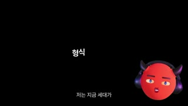
'형식 + 내용'
아바타 PIP
샷그래픽 + PIP앵글플랫카메라키네틱 타이포(단어 순차 등장·퇴장)구도검정 배경 중앙 '형식 + 내용' 텍스트(흰, 중간 굵기), 아바타 PIP 우측 중앙동작'형식' → '+' → '내용' 순서로 말에 맞춰 팝업, 66초 '형식'이 사라지고 '내용'만 남음대사알간지: 저는 지금 세대가 형식과 내용의 합치를 굉장히 중요하게 생각한다고 분석을 했어요. 그래서 이들은화면 자막그래픽 '형식 + 내용' + 하단 자막들어오는 전환하드컷(흰→검)효과음/음악팝 사운드(추정)역할핵심 개념 시각화(키워드 앵커)
1순위
(Pollo 이미지 모델 중 레퍼런스 지원 모델)그래픽 카드는 이미지 1장 + HyperFrames/FFmpeg 애니메이션이 정확
2순위
kling-v33D 책 목업 회전이 필요할 때
3순위
wan-v3-0추상 라인 애니메이션 대안
① 이미지 프롬프트 (원본 클론)16:9 frame, pure black background, centered white Korean text '형식 + 내용' in clean sans-serif, stylized 3D clay-like devil avatar: perfectly round glossy tomato-red head (#EE3B2E), two short curved dark purple-black horns, oversized matte purple-black over-ear headphones, almond eyes with pale peach sclera and cobalt-blue irises, thin dark-red straight eyebrows, tiny nose, small glossy pouting red lips, no body, soft subsurface scattering, Pixar-meets-indie-3D look at right-middle
② 영상 프롬프트 (원본 클론)Words pop in one by one synced to speech (형식 0.0s, + 0.6s, 내용 1.2s), later '형식 +' slides out leaving '내용', 6.75s
③ 동물 버전 이미지 프롬프트Same black kinetic text card with Hamzzi on the right
④ 동물 버전 영상 프롬프트Words pop in sequence, Hamzzi nods
네거티브realistic human host, live-action presenter, photoreal skin, extra horns, extra eyes, open mouth teeth, deformed headphones, text artifacts, misspelled Korean, watermark, logo, cluttered background, gradient background, drop shadow on white, low resolution, blurry, jpeg artifacts
컷 14 · 추상 개념을 우스꽝스러운 합성 밈으로 번역
67.5s → 72.375s (4.875s)
악마머리 점프맨
샷WS 컷아웃 합성앵글아이레벨카메라좌→우 슬라이드 인구도흰 배경, 서류가방 들고 점프하는 회색 정장 남성 스톡 컷아웃에 아바타(악마) 얼굴 합성, 화면 좌측에서 들어와 우측으로 이동동작점프하는 비즈니스맨 몸 + 악마 얼굴 = 소비자 의인화대사알간지: 그냥 외관이 멋있다고 소비하지도 않고 내용이 좋다고 소비하지도 않습니다.화면 자막하단 자막들어오는 전환하드컷효과음/음악휙(추정)역할추상 개념을 우스꽝스러운 합성 밈으로 번역
1순위
(Pollo 이미지 모델 중 레퍼런스 지원 모델)그래픽 카드는 이미지 1장 + HyperFrames/FFmpeg 애니메이션이 정확
2순위
kling-v33D 책 목업 회전이 필요할 때
3순위
wan-v3-0추상 라인 애니메이션 대안
① 이미지 프롬프트 (원본 클론)16:9 frame, pure white background, cutout stock photo of a businessman in grey suit leaping mid-air holding a black briefcase, his head replaced by a flat red devil face with small black horns, collage meme style
② 영상 프롬프트 (원본 클론)Cutout slides in from left edge to left third over 0.5s, holds mid-leap, then exits right, 4.9s
③ 동물 버전 이미지 프롬프트16:9 frame, white background, cutout of a businessman in grey suit leaping with briefcase, head replaced by a hamster head with tiny horns, collage meme style
④ 동물 버전 영상 프롬프트Cutout slides in from left, holds, exits right, 4.9s
네거티브realistic human host, live-action presenter, photoreal skin, extra horns, extra eyes, open mouth teeth, deformed headphones, text artifacts, misspelled Korean, watermark, logo, cluttered background, gradient background, drop shadow on white, low resolution, blurry, jpeg artifacts
컷 15 · 개념 '합치'의 시각적 펀치라인
72.375s → 77.875s (5.5s)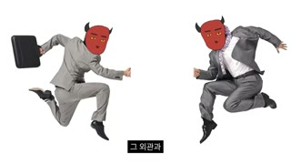
점프맨 A
점프맨 B
글로우
샷WS 컷아웃 합성(2인)앵글아이레벨카메라양쪽에서 슬라이드 → 중앙에서 하이파이브, 빛 번쩍구도좌: 서류가방 점프맨 / 우: 두 번째 점프맨, 중앙에서 손이 만나며 폭발형 글로우동작외관(A)과 내면(B)이 만나 하이파이브 = 합치대사알간지: 그 외관과 내면이 합치됐을 때 비로소 기꺼이 소비한다고 생각을 했어요.화면 자막하단 자막들어오는 전환하드컷효과음/음악쨍/반짝 효과음(추정)역할개념 '합치'의 시각적 펀치라인
1순위
(Pollo 이미지 모델 중 레퍼런스 지원 모델)그래픽 카드는 이미지 1장 + HyperFrames/FFmpeg 애니메이션이 정확
2순위
kling-v33D 책 목업 회전이 필요할 때
3순위
wan-v3-0추상 라인 애니메이션 대안
① 이미지 프롬프트 (원본 클론)16:9 frame, white background, two cutout businessmen with red devil faces leaping toward each other from left and right, hands meeting at center with a bright orange-white light burst, collage meme style
② 영상 프롬프트 (원본 클론)Both cutouts slide toward center over 0.8s, hands touch, radial glow flash at 1.3s, hold, 5.5s
③ 동물 버전 이미지 프롬프트Two cutout businessmen with hamster heads leaping and high-fiving at center with light burst
④ 동물 버전 영상 프롬프트Slide in, high-five, glow flash, 5.5s
네거티브realistic human host, live-action presenter, photoreal skin, extra horns, extra eyes, open mouth teeth, deformed headphones, text artifacts, misspelled Korean, watermark, logo, cluttered background, gradient background, drop shadow on white, low resolution, blurry, jpeg artifacts
컷 16 · 밈 리액션으로 논리 설명의 지루함 차단
77.875s → 86.5s (8.625s)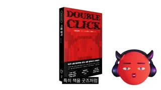
아바타 PIP(우하단)
하단 자막 박스
밈 남성
라벨 '무슨 의미?'
샷MS 제품 + PIP → 밈 사진 + PIP앵글아이레벨카메라책 회전 → 81초 밈 사진 컷(약한 줌)구도책 회전+PIP(77.9~81) → 흰 배경 밈: 안경을 벗었다 쓰는 남성(상반신), 라벨 '오...' → '무슨 의미?' 상단, PIP 유지동작안경을 치켜 쓰며 '오... 무슨 의미?' 하는 밈으로 '본질과 의미를 갈망하는 세대' 표현대사알간지: 특히 책을 굿즈처럼 소비하는 경향이 있으면서도 형식을 넘어서는 본질과 의미 역시 깊게 갈망하는 세대라고 생각을 했기 때문에화면 자막라벨 '오...' → '무슨 의미?' + 하단 자막들어오는 전환하드컷(PIP는 연속 유지 = 시각적 앵커)효과음/음악없음역할밈 리액션으로 논리 설명의 지루함 차단
1순위
hailuo-2-3과장된 리액션·펀치인 코믹 동작 빠르게
2순위
pixverse-v6짧은 밈 루프·과장 표정
3순위
grok-imagine-video-1-5짧은 개그 컷 대안
① 이미지 프롬프트 (원본 클론)16:9 frame, white background, cutout photo of a young man pushing up his glasses with both hands, curious squint, bare shoulders, stylized 3D clay-like devil avatar: perfectly round glossy tomato-red head (#EE3B2E), two short curved dark purple-black horns, oversized matte purple-black over-ear headphones, almond eyes with pale peach sclera and cobalt-blue irises, thin dark-red straight eyebrows, tiny nose, small glossy pouting red lips, no body, soft subsurface scattering, Pixar-meets-indie-3D look small at bottom-right, boxed caption '무슨 의미?' top
② 영상 프롬프트 (원본 클론)Man lowers then raises glasses curiously (2-frame meme swap), caption changes '오...' to '무슨 의미?' at 1s, avatar PIP talks, 5s
③ 동물 버전 이미지 프롬프트Cutout photo of a hamster pushing up tiny glasses with both paws, curious squint, Hamzzi PIP at bottom-right
④ 동물 버전 영상 프롬프트Hamster adjusts glasses, caption swap, 5s
네거티브realistic human host, live-action presenter, photoreal skin, extra horns, extra eyes, open mouth teeth, deformed headphones, text artifacts, misspelled Korean, watermark, logo, cluttered background, gradient background, drop shadow on white, low resolution, blurry, jpeg artifacts
컷 17 · 팬 대상 메시지(파라소셜 강화) — 훅 구간 종료
86.5s → 103.875s (17.375s)
아바타 PIP(우하단)
하단 자막 박스
3D 책
샷MS 제품 + PIP앵글아이레벨카메라3D 책 회전 연속(17초 롱테이크)구도흰 배경 책 턴테이블 + 아바타 PIP 우하단 (측정상 한 샷, 자막만 교체)동작책이 계속 회전하며 스파인·뒷표지 노출대사알간지: 반드시 형식과 내용 그 둘의 합치를 이뤄야 한다고 생각했습니다. 더군다나 내가 유튜버잖아요. 저자 특성상 굿즈의 의미로 구매하고자 하는 소비자들이 있을 거라고 판단했기 때문에 읽고 싶기 이전에 갖고 싶게, 즉 가질 만한 가치가 있도록 만드는 게 팬들에 대한 도리라고 생각했습니다.화면 자막하단 자막만 2~3초마다 교체들어오는 전환하드컷효과음/음악없음역할팬 대상 메시지(파라소셜 강화) — 훅 구간 종료
1순위
(Pollo 이미지 모델 중 레퍼런스 지원 모델)그래픽 카드는 이미지 1장 + HyperFrames/FFmpeg 애니메이션이 정확
2순위
kling-v33D 책 목업 회전이 필요할 때
3순위
wan-v3-0추상 라인 애니메이션 대안
① 이미지 프롬프트 (원본 클론)16:9 frame, pure white background, photoreal 3D hardcover book 'DOUBLE CLICK' on invisible turntable showing spine and back cover, stylized 3D clay-like devil avatar: perfectly round glossy tomato-red head (#EE3B2E), two short curved dark purple-black horns, oversized matte purple-black over-ear headphones, almond eyes with pale peach sclera and cobalt-blue irises, thin dark-red straight eyebrows, tiny nose, small glossy pouting red lips, no body, soft subsurface scattering, Pixar-meets-indie-3D look small in bottom-right
② 영상 프롬프트 (원본 클론)Continuous slow turntable rotation 17s, avatar PIP talks with occasional eye-roll and brow lift
③ 동물 버전 이미지 프롬프트Same book turntable with Hamzzi PIP bottom-right
④ 동물 버전 영상 프롬프트Turntable 17s, Hamzzi PIP talks
네거티브realistic human host, live-action presenter, photoreal skin, extra horns, extra eyes, open mouth teeth, deformed headphones, text artifacts, misspelled Korean, watermark, logo, cluttered background, gradient background, drop shadow on white, low resolution, blurry, jpeg artifacts
컷 18 · [B롤 유형: 드라마·예능 짤 클립] 감정 과장 리액션 짤
103.875s → 110.75s (6.875s)고뇌 인물
샷MS 실사 드라마 클립앵글아이레벨카메라고정(원본 클립)구도풀프레임 한국 드라마/예능 클립: 헝클어진 머리의 여성이 노트북 앞에서 머리를 쥐어뜯음, 인물 좌측 2/3동작머리 쥐어뜯으며 고뇌대사알간지: 미친 듯이 고민했습니다.화면 자막'미친 듯이 고민했습니다'들어오는 전환하드컷효과음/음악원본 클립 사운드 제거(추정)역할[B롤 유형: 드라마·예능 짤 클립] 감정 과장 리액션 짤
1순위
veo-3-1실사 자료화면·카메라 푸시인/핸드헬드 질감
2순위
kling-v3제품(책) 회전·손 동작 물리감
3순위
wan-v3-0환경/야경 B롤 저비용
① 이미지 프롬프트 (원본 클론)16:9 frame, medium shot of a frazzled young Korean woman with messy shaggy hair in a white ruffled blouse, clutching her head in front of a laptop, indoor apartment daylight, K-drama comedic despair
② 영상 프롬프트 (원본 클론)She grabs her hair and slumps in frustration, 6.9s, static TV-drama framing
③ 동물 버전 이미지 프롬프트16:9 frame, a frazzled hamster with messy fur in a white ruffled blouse clutching its head in front of a tiny laptop, indoor daylight
④ 동물 버전 영상 프롬프트Hamster tugs its fur in frustration and slumps, 6.9s
네거티브realistic human host, live-action presenter, photoreal skin, extra horns, extra eyes, open mouth teeth, deformed headphones, text artifacts, misspelled Korean, watermark, logo, cluttered background, gradient background, drop shadow on white, low resolution, blurry, jpeg artifacts
컷 19 · [B롤 유형: 영어 키워드 카드] 개념어를 영어 한 단어로 앵커
110.75s → 123.375s (12.625s)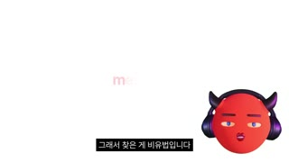
아바타 PIP(우하단)
하단 자막 박스
'metaphor'
샷그래픽 → 사진 + PIP앵글플랫카메라타이핑 텍스트 → 컷구도흰 배경 중앙 빨간 소문자 'metaphor' 타이핑 등장 → 120초 빨간 악마 봉제인형 사진(중앙) + 좌상단 라벨 '이 ㅅㄲ 악마네' + PIP동작영단어 키워드 → 인형 사진으로 비유 설명대사알간지: 그래서 찾은 게 비유법입니다. 비유법을 활용해 이미지의 해석의 여지를 주면 ... 쌍방향으로 소통이 가능한 살아 있는 이미지로화면 자막'metaphor'(빨강 #E3202B 굵은 산세리프) + 라벨 '이 ㅅㄲ 악마네'들어오는 전환하드컷효과음/음악타자 효과음(추정)역할[B롤 유형: 영어 키워드 카드] 개념어를 영어 한 단어로 앵커
1순위
(Pollo 이미지 모델 중 레퍼런스 지원 모델)그래픽 카드는 이미지 1장 + HyperFrames/FFmpeg 애니메이션이 정확
2순위
kling-v33D 책 목업 회전이 필요할 때
3순위
wan-v3-0추상 라인 애니메이션 대안
① 이미지 프롬프트 (원본 클론)16:9 frame, pure white background, single lowercase word 'metaphor' in bold red sans-serif at center, stylized 3D clay-like devil avatar: perfectly round glossy tomato-red head (#EE3B2E), two short curved dark purple-black horns, oversized matte purple-black over-ear headphones, almond eyes with pale peach sclera and cobalt-blue irises, thin dark-red straight eyebrows, tiny nose, small glossy pouting red lips, no body, soft subsurface scattering, Pixar-meets-indie-3D look small at bottom-right
② 영상 프롬프트 (원본 클론)Letters type on one by one over 0.8s, hold, 12s total with later cut to a plush photo
③ 동물 버전 이미지 프롬프트White background, red word 'metaphor' at center, Hamzzi PIP bottom-right
④ 동물 버전 영상 프롬프트Letters type on, Hamzzi nods
네거티브realistic human host, live-action presenter, photoreal skin, extra horns, extra eyes, open mouth teeth, deformed headphones, text artifacts, misspelled Korean, watermark, logo, cluttered background, gradient background, drop shadow on white, low resolution, blurry, jpeg artifacts
컷 20 · [B롤 유형: 텍스트 카드] 진지한 메시지 구간 신호
142.25s → 166.375s (24.125s)인용문
아바타 PIP
샷텍스트 카드 + PIP앵글플랫카메라한 줄씩 페이드인구도검정 배경 중앙 상단 40% 지점에 가는 흰 명조/고딕 인용문 2줄, 아바타 PIP 우하단동작책의 핵심 질문을 인용 카드로 제시하고 설명대사알간지: 지금 네가 내린 선택으로 최악의 결과가 나오더라도 그 누구도 원망하지 않을 수 있냐?화면 자막카드 '지금 네가 내린 선택으로 최악의 결과가 나오더라도 / 그 누구도 원망하지 않을 수 있냐' + 하단 자막(카드 모드에선 박스 없이 흰 글씨)들어오는 전환하드컷(흰→검)효과음/음악BGM 톤다운(추정)역할[B롤 유형: 텍스트 카드] 진지한 메시지 구간 신호
1순위
(Pollo 이미지 모델 중 레퍼런스 지원 모델)그래픽 카드는 이미지 1장 + HyperFrames/FFmpeg 애니메이션이 정확
2순위
kling-v33D 책 목업 회전이 필요할 때
3순위
wan-v3-0추상 라인 애니메이션 대안
① 이미지 프롬프트 (원본 클론)16:9 frame, pure black background, two centered lines of thin white Korean text as a quote card, lots of negative space, stylized 3D clay-like devil avatar: perfectly round glossy tomato-red head (#EE3B2E), two short curved dark purple-black horns, oversized matte purple-black over-ear headphones, almond eyes with pale peach sclera and cobalt-blue irises, thin dark-red straight eyebrows, tiny nose, small glossy pouting red lips, no body, soft subsurface scattering, Pixar-meets-indie-3D look in bottom-right corner
② 영상 프롬프트 (원본 클론)Line 1 fades in (300ms), line 2 fades in 2s later, hold 24s while avatar PIP talks
③ 동물 버전 이미지 프롬프트Black quote card with thin white Korean text, Hamzzi in bottom-right corner
④ 동물 버전 영상 프롬프트Lines fade in sequentially, Hamzzi talks seriously
네거티브realistic human host, live-action presenter, photoreal skin, extra horns, extra eyes, open mouth teeth, deformed headphones, text artifacts, misspelled Korean, watermark, logo, cluttered background, gradient background, drop shadow on white, low resolution, blurry, jpeg artifacts
컷 21 · [A롤 롱테이크] 진정성 구간 — 편집 밀도 의도적 하락
166.375s → 222.125s (55.75s)
아바타(머리+헤드폰)
하단 자막 박스
샷MS 아바타 롱테이크앵글아이레벨카메라고정(55.75초 무컷, 자막만 교체)구도중앙 기본 구도, 흰 배경동작눈 굴림·눈썹 올림·깜빡임 정도의 미세연기만으로 1분 가까이 진술대사알간지: 좀 거창할 수도 있지만 제가 이렇게 살았어요 ... 선택과 실행 나와 나의 소비자들의 니즈가 합쳐지는 포인트를 찾은 거죠.화면 자막하단 자막 2~3초 청크 교체들어오는 전환하드컷효과음/음악없음역할[A롤 롱테이크] 진정성 구간 — 편집 밀도 의도적 하락
1순위
minimax-h3대사 오디오+미세 립싱크 동시 생성, 무료·팀 기본
2순위
kling-v3-omni레퍼런스 캐릭터 일관성 유지하며 눈·고개 미세 연기
3순위
seedance-2-0눈 굴리기·눈썹 등 미세표정 클로즈업 강점
① 이미지 프롬프트 (원본 클론)16:9 frame, pure white background, stylized 3D clay-like devil avatar: perfectly round glossy tomato-red head (#EE3B2E), two short curved dark purple-black horns, oversized matte purple-black over-ear headphones, almond eyes with pale peach sclera and cobalt-blue irises, thin dark-red straight eyebrows, tiny nose, small glossy pouting red lips, no body, soft subsurface scattering, Pixar-meets-indie-3D look, centered, neutral thoughtful expression
② 영상 프롬프트 (원본 클론)Long locked-off take 56s: subtle idle loop — blinks every 3-4s, occasional glance up-left when recalling, slight head tilt, minimal lip motion
③ 동물 버전 이미지 프롬프트16:9 frame, pure white background, stylized 3D clay-like hamster avatar 'Hamzzi': round fluffy golden-orange hamster head with cream cheeks, two tiny curved dark purple devil horns, oversized matte purple-black over-ear headphones, big glossy black eyes with small white highlights, thin expressive brows, tiny pink nose, small pouting mouth, no body, soft fur shading, Pixar-meets-indie-3D look, centered, thoughtful
④ 동물 버전 영상 프롬프트Idle talking loop 56s with blinks, glances, whisker twitch
네거티브realistic human host, live-action presenter, photoreal skin, extra horns, extra eyes, open mouth teeth, deformed headphones, text artifacts, misspelled Korean, watermark, logo, cluttered background, gradient background, drop shadow on white, low resolution, blurry, jpeg artifacts
컷 22 · [B롤 유형: 리터럴 스톡 영상] 버려진 아이디어를 1~2초 짤로 빠르게 소비 = 템포 가속
222.125s → 223.875s (1.75s)다트
다트판
샷CU 스톡 영상앵글사이드카메라고정구도검정 배경, 빨간 다트가 좌→우 다트판으로 날아가 꽂힘동작다트 명중(1.75초) → 25번 샷: 손가락이 종이를 뚫음(0.875초)대사알간지: 다트. 다트를 던져서 종이를 뚫어서화면 자막'다트 다트를 던져서?' / '종이를 뚫어서?'들어오는 전환하드컷(말 그대로 보여주기)효과음/음악다트 '퍽' 효과음(추정)역할[B롤 유형: 리터럴 스톡 영상] 버려진 아이디어를 1~2초 짤로 빠르게 소비 = 템포 가속
1순위
veo-3-1실사 자료화면·카메라 푸시인/핸드헬드 질감
2순위
kling-v3제품(책) 회전·손 동작 물리감
3순위
wan-v3-0환경/야경 B롤 저비용
① 이미지 프롬프트 (원본 클론)16:9 frame, black background, macro side shot of a red-flighted dart flying toward a black-red-white dartboard, shallow depth of field
② 영상 프롬프트 (원본 클론)Dart flies in and hits the board with a thud, 1.75s, locked camera
③ 동물 버전 이미지 프롬프트16:9 frame, black background, a tiny hamster paw throwing a red dart at a dartboard
④ 동물 버전 영상 프롬프트Dart thunks into board, 1.75s
네거티브realistic human host, live-action presenter, photoreal skin, extra horns, extra eyes, open mouth teeth, deformed headphones, text artifacts, misspelled Korean, watermark, logo, cluttered background, gradient background, drop shadow on white, low resolution, blurry, jpeg artifacts
컷 23 · [B롤 유형: 다이어그램] 개념 설명형 인포그래픽
231.875s → 250.625s (18.75s)
아바타 PIP(우하단)
하단 자막 박스
다이어그램
샷그래픽 다이어그램 + PIP앵글플랫카메라도형 드로잉 애니메이션구도흰 배경 중앙 원 안 'click' → 한 번 누름/두 번 누름 → 벤다이어그램 'one 선택 / two 실행'(상단 'Double Click')동작클릭 1회=선택, 2회=실행 개념 도식화대사알간지: 아이콘을 클릭할 때 한 번 누르면 선택이 되고 두 번 누르면 실행이 되잖아요.화면 자막그래픽 'click'(원 중앙→'click' 빨강 전환) + 하단 자막들어오는 전환하드컷효과음/음악마우스 클릭 '딸깍' 2회(추정)역할[B롤 유형: 다이어그램] 개념 설명형 인포그래픽
1순위
(Pollo 이미지 모델 중 레퍼런스 지원 모델)그래픽 카드는 이미지 1장 + HyperFrames/FFmpeg 애니메이션이 정확
2순위
kling-v33D 책 목업 회전이 필요할 때
3순위
wan-v3-0추상 라인 애니메이션 대안
① 이미지 프롬프트 (원본 클론)16:9 frame, pure white background, a thin black circle outline with the word 'click' in bold black sans-serif at center, stylized 3D clay-like devil avatar: perfectly round glossy tomato-red head (#EE3B2E), two short curved dark purple-black horns, oversized matte purple-black over-ear headphones, almond eyes with pale peach sclera and cobalt-blue irises, thin dark-red straight eyebrows, tiny nose, small glossy pouting red lips, no body, soft subsurface scattering, Pixar-meets-indie-3D look at bottom-right
② 영상 프롬프트 (원본 클론)Circle draws on (400ms), word 'click' appears, on first click it turns red (선택), on double click it pulses twice, then transforms into a two-circle Venn diagram labeled 'one 선택' and 'two 실행', 18.75s
③ 동물 버전 이미지 프롬프트Same white diagram with Hamzzi PIP bottom-right
④ 동물 버전 영상 프롬프트Circle draws, click pulses, Venn forms, Hamzzi nods
네거티브realistic human host, live-action presenter, photoreal skin, extra horns, extra eyes, open mouth teeth, deformed headphones, text artifacts, misspelled Korean, watermark, logo, cluttered background, gradient background, drop shadow on white, low resolution, blurry, jpeg artifacts
컷 24 · [B롤 유형: 레퍼런스 스크린샷] 향수 자극 레트로 UI
289.75s → 292.125s (2.375s)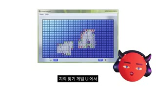
아바타 PIP(우하단)
하단 자막 박스
지뢰찾기 창
샷화면 캡처 + PIP앵글플랫카메라고정(약한 줌인)구도흰 배경 중앙 윈도우 지뢰찾기 게임 창 스크린샷, PIP 우하단동작시안의 레퍼런스 UI를 실제 스크린샷으로대사알간지: 지뢰찾기 게임 UI에서 차용을 해서화면 자막'지뢰 찾기 게임 UI에서'들어오는 전환하드컷효과음/음악윈도우 클릭음(추정)역할[B롤 유형: 레퍼런스 스크린샷] 향수 자극 레트로 UI
1순위
(Pollo 이미지 모델 중 레퍼런스 지원 모델)그래픽 카드는 이미지 1장 + HyperFrames/FFmpeg 애니메이션이 정확
2순위
kling-v33D 책 목업 회전이 필요할 때
3순위
wan-v3-0추상 라인 애니메이션 대안
① 이미지 프롬프트 (원본 클론)16:9 frame, white background, a retro Windows Minesweeper game window screenshot centered with blue grid tiles, stylized 3D clay-like devil avatar: perfectly round glossy tomato-red head (#EE3B2E), two short curved dark purple-black horns, oversized matte purple-black over-ear headphones, almond eyes with pale peach sclera and cobalt-blue irises, thin dark-red straight eyebrows, tiny nose, small glossy pouting red lips, no body, soft subsurface scattering, Pixar-meets-indie-3D look bottom-right
② 영상 프롬프트 (원본 클론)Slight 5% push-in over 2.4s
③ 동물 버전 이미지 프롬프트Retro Minesweeper window screenshot centered, Hamzzi bottom-right
④ 동물 버전 영상 프롬프트Slight push-in 2.4s
네거티브realistic human host, live-action presenter, photoreal skin, extra horns, extra eyes, open mouth teeth, deformed headphones, text artifacts, misspelled Korean, watermark, logo, cluttered background, gradient background, drop shadow on white, low resolution, blurry, jpeg artifacts
컷 25 · [B롤 유형: 작업과정 화면 녹화] 노동량 과시 몽타주 = 5년 서사의 증거
331.25s → 331.75s (0.5s)
아바타 PIP(우하단)
하단 자막 박스
샷화면 녹화 몽타주(0.5초×4)앵글플랫카메라0.5초 단위 연속 하드컷(버스트)구도어두운 기획서 PDF 화면: 타이틀 로고 시안 수십 개(흑/적 DOUBLE CLICK 픽셀 로고), 편집 핸들 박스, PIP 우하단동작331.25~333.375 사이 0.5초 컷 4개로 시안 더미를 빠르게 스크롤대사알간지: 내 내면에 있는 이 형체를 알 수 없는 욕구와 메시지를 구체화하는 과정이 너무 흥미롭긴 했지만화면 자막'메시지를 구체화하는 과정이' / '너무 흥미롭긴 했지만'들어오는 전환스피드 램프형 하드컷 버스트효과음/음악없음역할[B롤 유형: 작업과정 화면 녹화] 노동량 과시 몽타주 = 5년 서사의 증거
1순위
(Pollo 이미지 모델 중 레퍼런스 지원 모델)그래픽 카드는 이미지 1장 + HyperFrames/FFmpeg 애니메이션이 정확
2순위
kling-v33D 책 목업 회전이 필요할 때
3순위
wan-v3-0추상 라인 애니메이션 대안
① 이미지 프롬프트 (원본 클론)16:9 frame, dark UI design document page showing a grid of dozens of pixel-font logo variations 'DOUBLE CLICK' in black and red boxes with blue selection handles, stylized 3D clay-like devil avatar: perfectly round glossy tomato-red head (#EE3B2E), two short curved dark purple-black horns, oversized matte purple-black over-ear headphones, almond eyes with pale peach sclera and cobalt-blue irises, thin dark-red straight eyebrows, tiny nose, small glossy pouting red lips, no body, soft subsurface scattering, Pixar-meets-indie-3D look bottom-right
② 영상 프롬프트 (원본 클론)Four 0.5s hard cuts scrolling through different pages of logo drafts, 2.1s total
③ 동물 버전 이미지 프롬프트Same dark design-doc montage with Hamzzi bottom-right
④ 동물 버전 영상 프롬프트Four 0.5s cuts through design drafts
네거티브realistic human host, live-action presenter, photoreal skin, extra horns, extra eyes, open mouth teeth, deformed headphones, text artifacts, misspelled Korean, watermark, logo, cluttered background, gradient background, drop shadow on white, low resolution, blurry, jpeg artifacts
컷 26 · [B롤 유형: 디자인 해설 모션그래픽] 말하는 내용 = 화면 변화 1:1
342.75s → 378.875s (36.125s)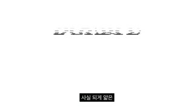
아바타 PIP(우하단)
하단 자막 박스
가로선 타이틀
샷그래픽 풀스크린 + PIP앵글플랫카메라글리치 라인 애니메이션(가로선 분해·재조립)구도흰 배경 중앙 'DOUBLE CLICK' 타이틀이 얇은 가로선으로 분해됐다 재조립, PIP 우하단동작타이틀이 가로선 조각으로 흔들리고 흩어짐 → '흔들리는 선택들이 쌓여 나를 만든다' 시각화대사알간지: 더블 클릭이라는 타이틀 텍스트는 가까이서 보면 사실 되게 얇은 가로선으로 이루어져 있습니다...화면 자막하단 자막들어오는 전환하드컷효과음/음악글리치 사운드(추정)역할[B롤 유형: 디자인 해설 모션그래픽] 말하는 내용 = 화면 변화 1:1
1순위
(Pollo 이미지 모델 중 레퍼런스 지원 모델)그래픽 카드는 이미지 1장 + HyperFrames/FFmpeg 애니메이션이 정확
2순위
kling-v33D 책 목업 회전이 필요할 때
3순위
wan-v3-0추상 라인 애니메이션 대안
① 이미지 프롬프트 (원본 클론)16:9 frame, pure white background, bold black blackletter-like title 'DOUBLE CLICK' built from dozens of thin misaligned horizontal lines, glitch scanline texture, stylized 3D clay-like devil avatar: perfectly round glossy tomato-red head (#EE3B2E), two short curved dark purple-black horns, oversized matte purple-black over-ear headphones, almond eyes with pale peach sclera and cobalt-blue irises, thin dark-red straight eyebrows, tiny nose, small glossy pouting red lips, no body, soft subsurface scattering, Pixar-meets-indie-3D look bottom-right
② 영상 프롬프트 (원본 클론)Lines shift horizontally out of alignment, scatter into noise, then reassemble into the title, loops over 36s synced to narration
③ 동물 버전 이미지 프롬프트Same glitch line title animation with Hamzzi bottom-right
④ 동물 버전 영상 프롬프트Lines scatter and reassemble, Hamzzi explains
네거티브realistic human host, live-action presenter, photoreal skin, extra horns, extra eyes, open mouth teeth, deformed headphones, text artifacts, misspelled Korean, watermark, logo, cluttered background, gradient background, drop shadow on white, low resolution, blurry, jpeg artifacts
컷 27 · [B롤 유형: 추상 모션그래픽] 비유(나이테)를 시각적으로 증명
435.625s → 453.875s (18.25s)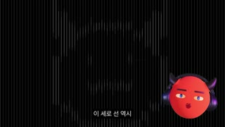
아바타 PIP(우하단)
하단 자막 박스
샷그래픽 풀스크린 + PIP앵글플랫카메라세로선 굵기 변화 애니메이션구도검정 배경 전체를 채운 가는 세로선, 굵기가 변하며 악마 얼굴 실루엣이 떠오름, PIP 우하단동작나이테 비유: 선택의 순간 = 굵어진 선대사알간지: 이 세로 선 역시 떼어놓고 보면 무엇인지 잘 모르고 ... 멀리서 보면 분명히 무엇인지 알게 될 테니화면 자막하단 자막들어오는 전환하드컷효과음/음악저음 앰비언트(추정)역할[B롤 유형: 추상 모션그래픽] 비유(나이테)를 시각적으로 증명
1순위
(Pollo 이미지 모델 중 레퍼런스 지원 모델)그래픽 카드는 이미지 1장 + HyperFrames/FFmpeg 애니메이션이 정확
2순위
kling-v33D 책 목업 회전이 필요할 때
3순위
wan-v3-0추상 라인 애니메이션 대안
① 이미지 프롬프트 (원본 클론)16:9 frame, black background filled with thin vertical white lines of varying thickness that together reveal a faint devil face silhouette, op-art style
② 영상 프롬프트 (원본 클론)Line thickness pulses and slowly reveals the hidden face over 18s, subtle zoom-out
③ 동물 버전 이미지 프롬프트Black op-art vertical lines revealing a faint hamster face silhouette, Hamzzi PIP bottom-right
④ 동물 버전 영상 프롬프트Lines thicken to reveal hamster face, 18s
네거티브realistic human host, live-action presenter, photoreal skin, extra horns, extra eyes, open mouth teeth, deformed headphones, text artifacts, misspelled Korean, watermark, logo, cluttered background, gradient background, drop shadow on white, low resolution, blurry, jpeg artifacts
컷 28 · [B롤 유형: 실물 언박싱 촬영] 굿즈 실물감 증명 + 호스트 신체를 털장갑으로 대체(얼굴 비공개 유지)
527.625s → 528.0s (0.375s)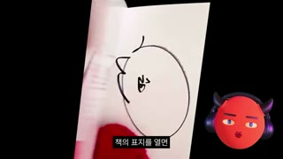
아바타 PIP(우하단)
하단 자막 박스
실물 책+빨간 털장갑
샷CU 실사 제품(핸드헬드)앵글하이 앵글 약간카메라핸드헬드 미세흔들림 + 페이지 넘김구도검정 배경, 빨간 털장갑 손(악마 손 컨셉)이 실물 책을 펼침 → 흰 속지(사인 낙서)·타이틀·검정 속지 순서 노출, PIP 우하단동작빨간 복슬 장갑 낀 손이 표지를 열고 속지를 넘김(0.4~0.8초 컷으로 빠르게)대사알간지: 책의 표지를 열면 하얀색 속지가 나오다가 타이틀이 나오고 까만색 속지가 나오고화면 자막'책의 표지를 열면' / '하얀색 속지가 나오다가' / '타이틀이 나오고' / '까만색 속지가 나오고'들어오는 전환하드컷 연속(말 단위 싱크)효과음/음악종이 넘김 소리(추정, 현장음)역할[B롤 유형: 실물 언박싱 촬영] 굿즈 실물감 증명 + 호스트 신체를 털장갑으로 대체(얼굴 비공개 유지)
1순위
veo-3-1실사 자료화면·카메라 푸시인/핸드헬드 질감
2순위
kling-v3제품(책) 회전·손 동작 물리감
3순위
wan-v3-0환경/야경 B롤 저비용
① 이미지 프롬프트 (원본 클론)16:9 frame, black background, close-up of a hardcover book being opened by hands wearing fluffy bright red fur mittens, white endpaper with a hand-drawn signature doodle, dramatic single softbox, handheld
② 영상 프롬프트 (원본 클론)Red furry mittens flip the cover open and turn endpapers one by one, slight handheld shake, 0.4-2s per page
③ 동물 버전 이미지 프롬프트16:9 frame, black background, close-up of tiny hamster paws in red knit mittens opening a hardcover book, white endpaper with doodle, handheld
④ 동물 버전 영상 프롬프트Hamster paws flip pages one by one, slight handheld shake
네거티브realistic human host, live-action presenter, photoreal skin, extra horns, extra eyes, open mouth teeth, deformed headphones, text artifacts, misspelled Korean, watermark, logo, cluttered background, gradient background, drop shadow on white, low resolution, blurry, jpeg artifacts
컷 29 · [B롤 유형: 매크로 디테일 샷] 팬 서비스 요소(영어 명언) 확인
587.25s → 599.375s (12.125s)
아바타 PIP(우하단)
하단 자막 박스
샷ECU 실사 페이지(매크로)앵글하이 앵글카메라핸드헬드 + 랙포커스(추정)구도책 본문 페이지 매크로, 빨간 털장갑 손가락이 영어 인용문(빨간 소제목)을 가리킴, PIP 우하단동작강조 영어 문구를 손가락으로 짚음대사알간지: 그리고 중간중간 강조하고 싶은 문구는 영어로 번역을 해서 넣어뒀는데화면 자막하단 자막들어오는 전환하드컷효과음/음악없음역할[B롤 유형: 매크로 디테일 샷] 팬 서비스 요소(영어 명언) 확인
1순위
veo-3-1실사 자료화면·카메라 푸시인/핸드헬드 질감
2순위
kling-v3제품(책) 회전·손 동작 물리감
3순위
wan-v3-0환경/야경 B롤 저비용
① 이미지 프롬프트 (원본 클론)16:9 frame, macro close-up of an open book page with Korean body text and a highlighted English quote block with small red heading, a red fluffy mitten finger pointing at it, soft window light, shallow depth of field
② 영상 프롬프트 (원본 클론)Mitten finger slides under the English line, slight handheld drift, focus pulls from finger to text, 12s
③ 동물 버전 이미지 프롬프트Macro book page with a hamster paw in red mitten pointing at an English quote
④ 동물 버전 영상 프롬프트Paw slides under the line, focus pull
네거티브realistic human host, live-action presenter, photoreal skin, extra horns, extra eyes, open mouth teeth, deformed headphones, text artifacts, misspelled Korean, watermark, logo, cluttered background, gradient background, drop shadow on white, low resolution, blurry, jpeg artifacts
컷 30 · 파트 전환 리훅(1부 형식 → 2부 내용) — 0.5초 줌 펀치
608.75s → 609.25s (0.5s)
아바타 얼굴 ECU
샷ECU 아바타(약 200% 펀치인)앵글아이레벨카메라급격 펀치인 0.5초 → 원복구도얼굴이 화면을 꽉 채우고 헤드폰·뿔 잘림동작'아무튼 자 이제' 할 때만 확 당겨 붙음대사알간지: 아무튼, 자 이제 형식에 대한 설명은 끝났고요.화면 자막'아무튼 자 이제'들어오는 전환하드 펀치인(패턴 인터럽트)효과음/음악whoosh(추정)역할파트 전환 리훅(1부 형식 → 2부 내용) — 0.5초 줌 펀치
1순위
hailuo-2-3과장된 리액션·펀치인 코믹 동작 빠르게
2순위
pixverse-v6짧은 밈 루프·과장 표정
3순위
grok-imagine-video-1-5짧은 개그 컷 대안
① 이미지 프롬프트 (원본 클론)16:9 frame, pure white background, extreme close-up of stylized 3D clay-like devil avatar: perfectly round glossy tomato-red head (#EE3B2E), two short curved dark purple-black horns, oversized matte purple-black over-ear headphones, almond eyes with pale peach sclera and cobalt-blue irises, thin dark-red straight eyebrows, tiny nose, small glossy pouting red lips, no body, soft subsurface scattering, Pixar-meets-indie-3D look, face filling the frame, horns and headphones cropped
② 영상 프롬프트 (원본 클론)Snap zoom in 200% for 0.5s then cut back, avatar raises brows
③ 동물 버전 이미지 프롬프트Extreme close-up of stylized 3D clay-like hamster avatar 'Hamzzi': round fluffy golden-orange hamster head with cream cheeks, two tiny curved dark purple devil horns, oversized matte purple-black over-ear headphones, big glossy black eyes with small white highlights, thin expressive brows, tiny pink nose, small pouting mouth, no body, soft fur shading, Pixar-meets-indie-3D look filling the frame
④ 동물 버전 영상 프롬프트Snap zoom 0.5s, Hamzzi raises brows
네거티브realistic human host, live-action presenter, photoreal skin, extra horns, extra eyes, open mouth teeth, deformed headphones, text artifacts, misspelled Korean, watermark, logo, cluttered background, gradient background, drop shadow on white, low resolution, blurry, jpeg artifacts
컷 31 · [A롤 고백 구간] 제목 '5년'의 페이오프 — 진정성으로 이탈 방지
668.5s → 812.125s (143.625s)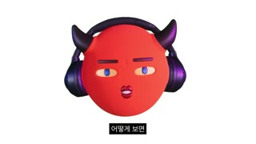
아바타(머리+헤드폰)
하단 자막 박스
샷MS 아바타 롱테이크(143초)앵글아이레벨카메라고정 + 간헐 오버레이(이메일 스크린샷 11:00)구도중앙 기본 구도 흰 배경 / 11:00 부근 Gmail 스크린샷이 중앙에 뜨고 아바타 PIP로 축소동작5년간의 자기의심 고백 — 거의 편집 없는 진술대사알간지: 제가 이 책을 5년 전에 계약을 했어요. 5년 동안 못 쓴 거죠 ... 노트북을 켜 놓고 그 앞에서 무너지는 순간이 많았어요.화면 자막하단 자막 청크들어오는 전환하드컷효과음/음악BGM 거의 제거(추정)역할[A롤 고백 구간] 제목 '5년'의 페이오프 — 진정성으로 이탈 방지
1순위
minimax-h3대사 오디오+미세 립싱크 동시 생성, 무료·팀 기본
2순위
kling-v3-omni레퍼런스 캐릭터 일관성 유지하며 눈·고개 미세 연기
3순위
seedance-2-0눈 굴리기·눈썹 등 미세표정 클로즈업 강점
① 이미지 프롬프트 (원본 클론)16:9 frame, pure white background, stylized 3D clay-like devil avatar: perfectly round glossy tomato-red head (#EE3B2E), two short curved dark purple-black horns, oversized matte purple-black over-ear headphones, almond eyes with pale peach sclera and cobalt-blue irises, thin dark-red straight eyebrows, tiny nose, small glossy pouting red lips, no body, soft subsurface scattering, Pixar-meets-indie-3D look, centered, slightly lowered eyelids, sincere expression
② 영상 프롬프트 (원본 클론)Long take 143s idle talking loop with slower blinks, downward glances on sad lines, very slight head drop
③ 동물 버전 이미지 프롬프트16:9 frame, pure white background, stylized 3D clay-like hamster avatar 'Hamzzi': round fluffy golden-orange hamster head with cream cheeks, two tiny curved dark purple devil horns, oversized matte purple-black over-ear headphones, big glossy black eyes with small white highlights, thin expressive brows, tiny pink nose, small pouting mouth, no body, soft fur shading, Pixar-meets-indie-3D look, centered, sincere slightly teary eyes
④ 동물 버전 영상 프롬프트Long idle talking loop, downward glances on sad lines
네거티브realistic human host, live-action presenter, photoreal skin, extra horns, extra eyes, open mouth teeth, deformed headphones, text artifacts, misspelled Korean, watermark, logo, cluttered background, gradient background, drop shadow on white, low resolution, blurry, jpeg artifacts
컷 32 · [B롤 유형: 감성 스톡 영상] 감정 클라이맥스 전 분위기 전환
812.125s → 818.875s (6.75s)
산책로+가로등
샷WS 스톡 영상(야경)앵글아이레벨카메라고정/느린 달리(추정)구도밤 공원 산책로, 가로등 불빛, 원근 소실점 중앙동작인물 없는 새벽 공원 → 13:30 벤치에 앉은 다리 클로즈업대사알간지: 그날 새벽에 나가서 산책을 하고 벤치에 앉아 가지고 멍을 때리고 있었어요.화면 자막'그날 새벽에 나가서'들어오는 전환하드컷효과음/음악앰비언트 밤 소리(추정)역할[B롤 유형: 감성 스톡 영상] 감정 클라이맥스 전 분위기 전환
1순위
veo-3-1실사 자료화면·카메라 푸시인/핸드헬드 질감
2순위
kling-v3제품(책) 회전·손 동작 물리감
3순위
wan-v3-0환경/야경 B롤 저비용
① 이미지 프롬프트 (원본 클론)16:9 frame, empty park path at night lit by warm sodium street lamps, tall trees, bench on the right, cinematic low light, film grain
② 영상 프롬프트 (원본 클론)Very slow forward dolly along the path for 6.75s, leaves gently moving
③ 동물 버전 이미지 프롬프트Empty park path at night with warm lamps; a tiny hamster sitting alone on a bench far away
④ 동물 버전 영상 프롬프트Slow dolly toward the bench, 6.75s
네거티브realistic human host, live-action presenter, photoreal skin, extra horns, extra eyes, open mouth teeth, deformed headphones, text artifacts, misspelled Korean, watermark, logo, cluttered background, gradient background, drop shadow on white, low resolution, blurry, jpeg artifacts
컷 33 · [B롤 유형: 제품/웹 시연 화면 녹화] 구매 안 해도 참여 가능한 CTA
932.375s → 982.0s (49.625s)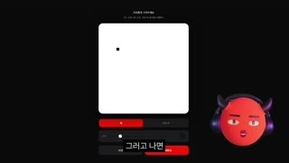
아바타 PIP(우하단)
하단 자막 박스
웹 캔버스
샷화면 녹화 + PIP앵글플랫카메라웹사이트 스크린 레코딩구도검정 배경 중앙 흰 캔버스(그림판) UI, 빨간 버튼, PIP 우하단 / 이어서 3D 방 공간·슬라이스 퍼즐 게임 화면동작rganzi.com에서 캐릭터 그리기→방 입장→원하는 것 그리기→슬라이스 게임 시연대사알간지: 들어가서 캐릭터를 한번 그려요. 그러면 그 캐릭터가 어떤 방 안에 들어가는데 ...화면 자막하단 자막들어오는 전환하드컷(앞 'rganzi.com' 검정 타이틀 카드에서)효과음/음악UI 클릭음(추정)역할[B롤 유형: 제품/웹 시연 화면 녹화] 구매 안 해도 참여 가능한 CTA
1순위
(Pollo 이미지 모델 중 레퍼런스 지원 모델)그래픽 카드는 이미지 1장 + HyperFrames/FFmpeg 애니메이션이 정확
2순위
kling-v33D 책 목업 회전이 필요할 때
3순위
wan-v3-0추상 라인 애니메이션 대안
① 이미지 프롬프트 (원본 클론)16:9 frame, black background, minimal web app UI with a white square drawing canvas and red buttons, a simple stick-figure character drawing, stylized 3D clay-like devil avatar: perfectly round glossy tomato-red head (#EE3B2E), two short curved dark purple-black horns, oversized matte purple-black over-ear headphones, almond eyes with pale peach sclera and cobalt-blue irises, thin dark-red straight eyebrows, tiny nose, small glossy pouting red lips, no body, soft subsurface scattering, Pixar-meets-indie-3D look bottom-right
② 영상 프롬프트 (원본 클론)Screen recording: cursor draws a cat-like character, clicks red button, character enters a wireframe 3D room with stickers, 50s
③ 동물 버전 이미지 프롬프트Same web app screen recording with Hamzzi bottom-right
④ 동물 버전 영상 프롬프트Cursor draws, clicks, room appears
네거티브realistic human host, live-action presenter, photoreal skin, extra horns, extra eyes, open mouth teeth, deformed headphones, text artifacts, misspelled Korean, watermark, logo, cluttered background, gradient background, drop shadow on white, low resolution, blurry, jpeg artifacts
컷 34 · 쑥스러움 개그 = 감정 환기
1006.875s → 1007.125s (0.25s)
아바타 얼굴
샷ECU 아바타(더치 틸트 ~20°, 약 220%)앵글더치카메라0.25초 급펀치인+회전구도얼굴이 기울어진 채 화면 가득, 입꼬리 웃음동작'처음 해봤습니다. 하하하' 웃음에 맞춘 0.25초 틸트 줌대사알간지: 처음 해봤습니다. 하하하.화면 자막'처음 해봤습니다'들어오는 전환스냅 줌+회전(코믹 펀치)효과음/음악웃음 강조 효과음(추정)역할쑥스러움 개그 = 감정 환기
1순위
hailuo-2-3과장된 리액션·펀치인 코믹 동작 빠르게
2순위
pixverse-v6짧은 밈 루프·과장 표정
3순위
grok-imagine-video-1-5짧은 개그 컷 대안
① 이미지 프롬프트 (원본 클론)16:9 frame, white background, extreme close-up of stylized 3D clay-like devil avatar: perfectly round glossy tomato-red head (#EE3B2E), two short curved dark purple-black horns, oversized matte purple-black over-ear headphones, almond eyes with pale peach sclera and cobalt-blue irises, thin dark-red straight eyebrows, tiny nose, small glossy pouting red lips, no body, soft subsurface scattering, Pixar-meets-indie-3D look tilted 20 degrees, smiling lips, one eye bigger due to wide-angle
② 영상 프롬프트 (원본 클론)Snap tilt-zoom 0.25s on laugh, then hard cut back
③ 동물 버전 이미지 프롬프트Extreme tilted close-up of stylized 3D clay-like hamster avatar 'Hamzzi': round fluffy golden-orange hamster head with cream cheeks, two tiny curved dark purple devil horns, oversized matte purple-black over-ear headphones, big glossy black eyes with small white highlights, thin expressive brows, tiny pink nose, small pouting mouth, no body, soft fur shading, Pixar-meets-indie-3D look laughing
④ 동물 버전 영상 프롬프트Snap tilt-zoom 0.25s on laugh
네거티브realistic human host, live-action presenter, photoreal skin, extra horns, extra eyes, open mouth teeth, deformed headphones, text artifacts, misspelled Korean, watermark, logo, cluttered background, gradient background, drop shadow on white, low resolution, blurry, jpeg artifacts
컷 35 · [B롤 유형: 팬 보상 증거 화면] 멤버십 전환 CTA
1018.75s → 1027.625s (8.875s)
팬카드 그리드
아바타
샷그리드 풀스크린 + 아바타 중앙 오버레이앵글플랫카메라천천히 스크롤(추정)구도빨간 배경 위 흰 선 손그림 팬카드 썸네일 격자(닉네임 라벨), 아바타가 중앙에 겹침동작멤버십 1년+ 회원 닉네임별 손그림 카드 목록대사알간지: 단소하게 제가 이제 닉네임에 맞춰서 그림을 하나씩 그리고 책 속에 문구를 담은 카드입니다.화면 자막하단 자막들어오는 전환하드컷효과음/음악없음역할[B롤 유형: 팬 보상 증거 화면] 멤버십 전환 CTA
1순위
(Pollo 이미지 모델 중 레퍼런스 지원 모델)그래픽 카드는 이미지 1장 + HyperFrames/FFmpeg 애니메이션이 정확
2순위
kling-v33D 책 목업 회전이 필요할 때
3순위
wan-v3-0추상 라인 애니메이션 대안
① 이미지 프롬프트 (원본 클론)16:9 frame, grid of dozens of small red cards each with a white line doodle and nickname label below, Google Drive thumbnail layout, stylized 3D clay-like devil avatar: perfectly round glossy tomato-red head (#EE3B2E), two short curved dark purple-black horns, oversized matte purple-black over-ear headphones, almond eyes with pale peach sclera and cobalt-blue irises, thin dark-red straight eyebrows, tiny nose, small glossy pouting red lips, no body, soft subsurface scattering, Pixar-meets-indie-3D look centered on top
② 영상 프롬프트 (원본 클론)Grid slowly scrolls up 8.9s, avatar centered talking
③ 동물 버전 이미지 프롬프트Grid of red fan cards with white doodles, Hamzzi centered on top
④ 동물 버전 영상 프롬프트Grid scrolls, Hamzzi talks
네거티브realistic human host, live-action presenter, photoreal skin, extra horns, extra eyes, open mouth teeth, deformed headphones, text artifacts, misspelled Korean, watermark, logo, cluttered background, gradient background, drop shadow on white, low resolution, blurry, jpeg artifacts
컷 36 · [B롤 유형: 크레딧+팬 댓글] 시청자를 '출연진'으로 격상 → 끝까지 시청·댓글 유도
1106.0s → 1340.209s (234.209s)
크레딧 열
팬 댓글 카드
샷크레딧 롤 풀스크린앵글플랫카메라세로 스크롤 크레딧(약 234초)구도검정 배경, 우측 55~75% 열에 흰 크레딧(책 판권 → 친구·가족·강아지 → 멤버십 닉네임 수백 개), 좌측 10~45% 영역에 팬 댓글 캡처 카드가 하나씩 떠올랐다 사라짐동작엔딩곡(영어 보컬 발라드) 위에 크레딧 스크롤 + 팬 댓글 오버레이대사(보컬 엔딩곡만, 내레이션 없음)화면 자막크레딧 텍스트(굵은 역할명 + 이름)들어오는 전환1106.04~1107.69 무음 1.65초 후 시작(측정)효과음/음악엔딩곡 풀재생역할[B롤 유형: 크레딧+팬 댓글] 시청자를 '출연진'으로 격상 → 끝까지 시청·댓글 유도
1순위
(Pollo 이미지 모델 중 레퍼런스 지원 모델)그래픽 카드는 이미지 1장 + HyperFrames/FFmpeg 애니메이션이 정확
2순위
kling-v33D 책 목업 회전이 필요할 때
3순위
wan-v3-0추상 라인 애니메이션 대안
① 이미지 프롬프트 (원본 클론)16:9 frame, pure black background, white end-credits column on the right with bold role names and names, on the left a floating screenshot of a YouTube comment card in dark mode
② 영상 프롬프트 (원본 클론)Credits scroll upward at constant speed (~60 px/s at 1080p) for 234s, comment cards fade in/out every 8-10s on the left
③ 동물 버전 이미지 프롬프트Same black credits roll with a tiny Hamzzi sitting on the credit column waving
④ 동물 버전 영상 프롬프트Credits scroll, Hamzzi waves occasionally
네거티브realistic human host, live-action presenter, photoreal skin, extra horns, extra eyes, open mouth teeth, deformed headphones, text artifacts, misspelled Korean, watermark, logo, cluttered background, gradient background, drop shadow on white, low resolution, blurry, jpeg artifacts
✂️ 편집 키트
타임라인0~24s 아바타 인사→흑배경 채널명 스팅→손그림 오해 개그→알 깨기 책 리빌 | 24~44s 밈 3연타+펀치인 '나왔습니다' | 44~52s 진자 로드맵 그래픽 | 52~130s 책 턴테이블+PIP, 키네틱 '형식+내용', 합성 점프맨, 밈 | 130~250s 제목 기원(인용카드·다트·클릭 다이어그램) | 250~343s 시안 과정(지뢰찾기·0.5s 몽타주) | 343~520s 표지 해설 모션그래픽 | 520~609s 털장갑 실물 책 | 608.75 0.5s 줌 펀치로 2부 전환 | 609~1106s A롤 롱테이크 고백+야경 B롤+웹 시연+사인본+팬카드 | 1106~1340s 크레딧 롤
FFmpeg 명령# 0) 공통: 1920x1080 29.97fps, 창 없이 실행(PowerShell에서 직접 호출)
# 1) 아바타 A롤 점프컷 조립 (cuts.txt: file 'av_001.mp4' / inpoint 0 / outpoint 2.375 ...)
ffmpeg -f concat -safe 0 -i cuts.txt -c:v libx264 -crf 18 -r 30000/1001 -c:a aac -b:a 192k aroll.mp4
# 2) 하드 펀치인 115%(채널명 스팅) / 200%(파트 전환 0.5초)
ffmpeg -i av.mp4 -vf "crop=iw/1.15:ih/1.15:(iw-iw/1.15)/2:(ih-ih/1.15)/2,scale=1920:1080:flags=lanczos" -c:a copy punch115.mp4
ffmpeg -ss 608.75 -t 0.5 -i av.mp4 -vf "crop=iw/2:ih/2:iw/4:ih/5,scale=1920:1080" -c:a copy punch200.mp4
# 3) 흰→검 배경 반전 스팅(아바타를 알파 ProRes4444로 렌더했다고 가정)
ffmpeg -f lavfi -i color=black:s=1920x1080:r=30000/1001:d=0.875 -i av_alpha.mov -filter_complex "[1:v]scale=iw*1.15:-1[a];[0:v][a]overlay=(W-w)/2:(H-h)/2-40:shortest=1" sting.mp4
# 4) 밈 느린 푸시인(창문 여자, 5.5초 MS→ECU 250%)
ffmpeg -loop 1 -i meme.jpg -t 5.5 -vf "scale=3840:-2,zoompan=z='min(zoom+0.0055,2.5)':x='iw/2-(iw/zoom/2)':y='ih*0.42-(ih/zoom/2)':d=165:s=1920x1080:fps=30" pushin.mp4
# 5) 그래픽/B롤 + 아바타 우하단 PIP(가로 27%, 여백 20px)
ffmpeg -i broll.mp4 -i av_alpha.mov -filter_complex "[1:v]scale=520:-1[pip];[0:v][pip]overlay=W-w-24:H-h-12:shortest=1" -c:a copy broll_pip.mp4
# 6) 밈 라벨 drawtext(상단 박스) + 하단 기본 자막은 ASS
ffmpeg -i meme_pip.mp4 -vf "drawtext=fontfile='C\:/Windows/Fonts/DungGeunMo.ttf':text='언니 책을 써 봐':fontsize=92:fontcolor=white:box=1:boxcolor=black@1:boxborderw=14:x=(w-tw)/2:y=h*0.07:enable='between(t,0.2,3.6)'" label.mp4
# 7) 키네틱 '형식 + 내용' 순차 팝업
ffmpeg -f lavfi -i color=black:s=1920x1080:d=6.75 -vf "drawtext=fontfile='C\:/Windows/Fonts/Pretendard-SemiBold.otf':text='형식':fontsize=64:fontcolor=white:x=w*0.40:y=h*0.46:enable='between(t,0,5.4)',drawtext=fontfile='C\:/Windows/Fonts/Pretendard-SemiBold.otf':text='+':fontsize=64:fontcolor=white:x=w*0.50:y=h*0.46:enable='between(t,0.6,5.4)',drawtext=fontfile='C\:/Windows/Fonts/Pretendard-SemiBold.otf':text='내용':fontsize=64:fontcolor=white:x=w*0.55:y=h*0.46:enable='gte(t,1.2)'" kinetic.mp4
# 8) 자막 번인(ASS)
ffmpeg -i edit.mp4 -vf "ass=alganzi.ass" -c:a copy subbed.mp4
# 9) BGM 덕킹 + -14 LUFS
ffmpeg -i subbed.mp4 -i bgm.wav -filter_complex "[0:a]asplit=2[vo][sc];[1:a]volume=0.22[bg];[bg][sc]sidechaincompress=threshold=0.02:ratio=10:attack=15:release=450:makeup=1[duck];[vo][duck]amix=inputs=2:duration=first:normalize=0,loudnorm=I=-14:TP=-1.5:LRA=11[a]" -map 0:v -map "[a]" -c:v copy -c:a aac -b:a 192k mix.mp4
# 10) 엔딩 크레딧 롤(세로로 긴 credits.png 1920x14000 투명 PNG, 234초 스크롤)
ffmpeg -f lavfi -i color=black:s=1920x1080:r=30000/1001:d=234.2 -loop 1 -i credits.png -filter_complex "[0:v][1:v]overlay=x=0:y='H-(t/234.2)*(h+H)':shortest=1" -i ending_song.wav -map 0:v -map 2:a -c:v libx264 -crf 18 -c:a aac credits.mp4
# 11) 최종 결합(무음 1.65초 갭 포함)
ffmpeg -f concat -safe 0 -i final_list.txt -c copy final.mp4
ASS 자막 스타일[Script Info]
ScriptType: v4.00+
PlayResX: 1920
PlayResY: 1080
[V4+ Styles]
Format: Name, Fontname, Fontsize, PrimaryColour, SecondaryColour, OutlineColour, BackColour, Bold, Italic, Underline, StrikeOut, ScaleX, ScaleY, Spacing, Angle, BorderStyle, Outline, Shadow, Alignment, MarginL, MarginR, MarginV, Encoding
Style: Sub,Pretendard Medium,46,&H00FFFFFF,&H00FFFFFF,&H00000000,&H00000000,0,0,0,0,100,100,0,0,3,10,0,2,40,40,96,1
Style: SubCard,Pretendard Light,44,&H00FFFFFF,&H00FFFFFF,&H00000000,&HFF000000,0,0,0,0,100,100,0,0,1,0,0,2,40,40,96,1
Style: Label,DungGeunMo,92,&H00FFFFFF,&H00FFFFFF,&H00000000,&H00000000,0,0,0,0,100,100,8,0,3,14,0,8,40,40,70,1
Style: Quote,Pretendard Light,40,&H00FFFFFF,&H00FFFFFF,&H00000000,&HFF000000,0,0,0,0,100,100,0,0,1,0,0,5,200,200,0,1
Style: Notice,Pretendard Medium,30,&H00BDBDBD,&H00BDBDBD,&H00000000,&HFF000000,0,0,0,0,100,100,0,0,1,0,0,8,40,40,20,1
[Events]
Format: Layer, Start, End, Style, Name, MarginL, MarginR, MarginV, Effect, Text
Dialogue: 0,0:00:00.00,0:00:01.00,Sub,,0,0,0,,안녕하세요
Dialogue: 0,0:00:01.00,0:00:02.40,Sub,,0,0,0,,알고 보면 간단한 지식
Dialogue: 0,0:00:02.40,0:00:03.25,Sub,,0,0,0,,알간지입니다
Dialogue: 0,0:00:11.50,0:00:17.50,Notice,,0,0,0,,이미지 제작 일부에 ai가 사용됨
Dialogue: 0,0:00:13.50,0:00:16.50,Label,,0,0,0,,{\pos(1440,230)}후아유
Dialogue: 0,0:00:21.60,0:00:24.25,Sub,,0,0,0,,{\c&H2B20E3&}책{\c&HFFFFFF&}을 낳았어요
Dialogue: 0,0:00:26.00,0:00:29.60,Label,,0,0,0,,언니 책을 써 봐
Dialogue: 0,0:02:22.25,0:02:46.30,Quote,,0,0,0,,{\fad(300,0)}지금 네가 내린 선택으로 최악의 결과가 나오더라도\N그 누구도 원망하지 않을 수 있냐
HyperFrames 편집 프롬프트 (Claude에 그대로 붙여넣기)HyperFrames로 '알간지식 책/프로젝트 설명회' 16:9 1920x1080 29.97fps 롱폼을 만들어줘. 호스트는 3D 아바타(원본: 빨간 악마, 동물판: 뿔+보라 헤드폰 쓴 햄스터 '햄찌') 머리만 있는 알파 영상(av_alpha.mov)을 쓴다.
[레이아웃] 기본=순백 배경 중앙 아바타(머리 높이 60%). 그래픽/B롤 구간=아바타를 우하단 PIP(가로 27%, right 24px, bottom 12px)로 상주. 강조 순간만 배경 검정 반전.
[자막] 모든 내레이션을 2~5어절 청크로, Pretendard Medium 46px 흰 글씨+불투명 검정 박스(padding 10px 18px), 하단 중앙 박스 중심 y=89%, 컷 단위 즉시 교체(애니메이션 0ms). 밈 라벨은 둥근모꼴 92px 흰 글씨+검정 박스 letter-spacing 8px, 상단 7% 위치에 0ms 팝, 3~4초 유지. 검정 카드 구간은 박스 없는 흰 글씨.
[훅 0~24.25s] 0~2375ms 아바타 인사(흰) → 2375~3250ms 검정 배경 115% 펀치인 '알간지입니다' → 3250~11500ms 아바타 → 11500ms 손그림 '신부 일러스트' 하드컷, 12500ms 아기 추가, 13500ms 300ms 줌인(1.0→1.6, ease-out)+'후아유'·'?' 라벨 팝, 상단 회색 'AI 사용 고지' 30px, 17000ms 300ms 줌아웃, 18000ms 전신 캐릭터, 19000ms 검은 원 등장 → 19750ms 검정 배경 실사 손이 알 깨기, 22000ms 책이 회전(rotateY 0→720deg, scale 0.1→1, 1200ms ease-out)하며 중앙 정지.
[24.25~44.25s] 스톡 밈 3연타: 26000ms '언니 책을 써 봐', 29625ms '긁적', 35125ms 창문 밈 5.5초 동안 scale 1.0→2.5 선형 푸시인+라벨 '... 쓰고는 있나?' 1500ms 페이드인 → 40625ms 아바타 125% 하드 펀치인 '나왔습니다' 900ms 유지 후 100%로 컷백.
[44.25~49.875s] 검정 배경 'Design Philosophy'(상단 14px), 좌 'structure'·우 'content' 64px 볼드, 하단 빨간 사각(#E3202B 40px)+흰 선 진자: rotate -35deg↔35deg, 말에 싱크해 1.1초 주기, 마지막 structure 쪽으로 정지.
[본편 규칙] 소챕터마다 질문형 자막으로 시작, 설명 3~6초마다 밈/키워드카드/다이어그램 교체(1부), 3D 책 턴테이블(rotateY 360deg/9s linear) 반복, 인용 카드는 줄별 fade 300ms. 0.5초 몽타주 버스트(4컷×500ms)는 '과정' 설명에만. 파트 전환은 아바타 200% 스냅줌 500ms. 2부 고백은 A롤 롱테이크(컷 최소화, BGM -30dB 이하). 웃음 포인트는 250ms 20deg 틸트 줌.
[오디오] 내레이션 -14 LUFS, BGM 로파이 76BPM을 사이드체인 덕킹(-18dB), 효과음은 알 깨짐·클릭·whoosh만 절제.
[엔딩] 1.65초 무음 → 검정 배경 크레딧 롤 234초(우측 열 x=60~85%, 역할명 볼드), 좌측에 팬 댓글 카드 8~10초 간격 fade 400ms, 엔딩곡.
✅ 똑같이 만들기 체크리스트
- 호스트는 '머리만 있는 3D 캐릭터'로 고정: 순백 배경 중앙(높이 60%) ↔ 그래픽 위 우하단 PIP(가로 27%) 두 가지 배치만 쓴다.
- 자막은 2~5어절 청크, 흰 글씨+불투명 검정 박스, 하단 중앙 Y≈89%, 전환 애니메이션 없이 컷 단위 교체.
- 밈 라벨은 하단 자막과 다른 폰트(모노/도트, 2배 크기, 넓은 자간)로 상단에 — 시청자·호스트 속마음을 가짜 대사로.
- 훅은 '지난 예고 회수 → 시청자 오해 재연 → 20초 내 정답 리빌' 3단. 로드맵 그래픽(2파트)을 45초 전후에 선언.
- 1부(설명)는 3~6초마다 시각 교체(밈/키워드/다이어그램/목업), 2부(고백)는 롱테이크로 감속 — 밀도 대비가 핵심.
- 소챕터는 반드시 질문으로 열고(왜 ~일까요?), 탈락 아이디어는 1~2초 리터럴 B롤로 빠르게 소비한 뒤 정답 다이어그램.
- 컬러는 블랙·레드·화이트만(+아바타 보라 포인트), 강조 빨강 #E3202B.
- 실사 손이 필요한 컷은 캐릭터 손(빨간 털장갑/햄스터 발)으로 — 얼굴 비공개 세계관 유지.
- 펀치인은 115%(강조)·125%(펀치라인)·200%(파트 전환 0.5초)·220%+틸트(웃음 0.25초) 4단계만.
- 엔딩은 무음 1~2초 → 팬 닉네임·댓글 크레딧 롤 + 엔딩곡으로 체류시간과 댓글 참여 유도. AI 이미지 사용 시 상단 회색 고지.
🐹 동물 버전 기획호스트 아바타만 '햄찌'(황금빛 햄스터 머리 + 원본의 보라 뿔·보라-검정 헤드폰을 브랜드 앵커로 유지)로 교체하고 편집 문법·레이아웃·자막·색(블랙/레드/화이트)은 그대로 둔다. 매핑: 빨간 악마 아바타 → 햄찌 머리 버스트(중앙/PIP 동일 좌표) / 빨간 털장갑 손 → 빨간 니트 장갑 낀 햄스터 앞발 / 악마 얼굴 합성 점프맨 → 햄스터 머리 합성 / 손그림 악마 신부 → 손그림 햄스터 신부 / 스톡 밈 인물 → 기존 실사 밈 유지 또는 기니피그·다람쥐 조연(햄찌와 구분). 대사는 '알간지입니다'→'햄찌입니다', 아웃트로도 교체. 제작: ① 햄찌 캐릭터 시트 이미지를 레퍼런스로 고정 ② 대사 컷은 minimax-h3로 립싱크+오디오 생성 후 흰 배경을 알파로 키잉(또는 흰 배경 그대로 사용) ③ 펀치인·PIP·자막·덕킹은 위 FFmpeg/HyperFrames 레시피 그대로. 원본처럼 입 움직임은 작게, 눈·눈썹·수염으로 연기해야 톤이 맞는다. 원본 스톡/드라마 클립·팬 댓글·실제 책 디자인은 저작권·초상권 문제로 복제 금지 — 동일 '유형'의 자체 제작/라이선스 소재로 대체.
전체 프레임 시트 보기 (타임코드 포함)
첫 90초 0.5초 간격
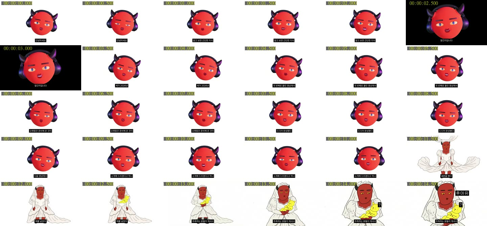
첫 90초 0.5초 간격
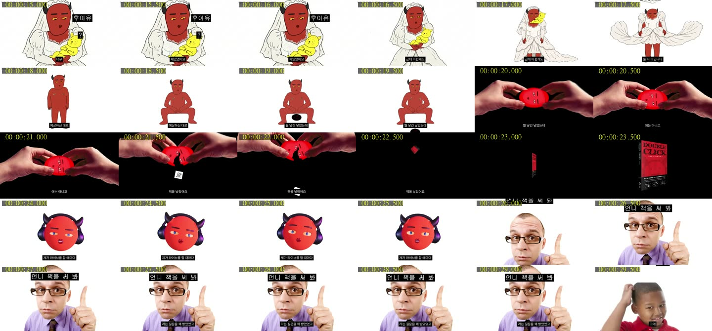
첫 90초 0.5초 간격

첫 90초 0.5초 간격

첫 90초 0.5초 간격
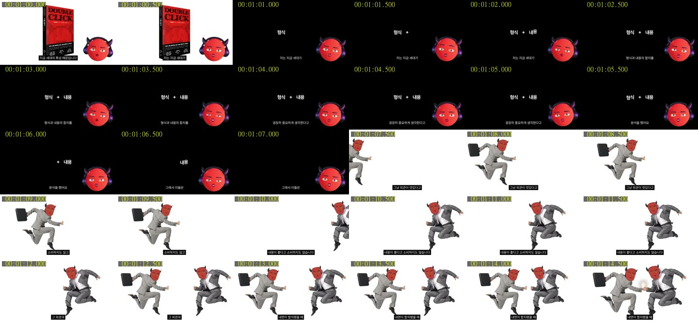
첫 90초 0.5초 간격

전체 흐름

전체 흐름

전체 흐름